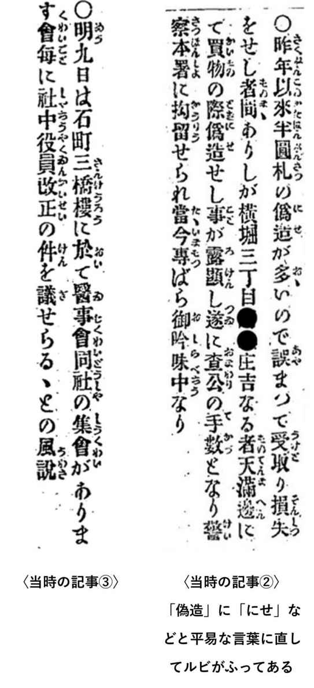
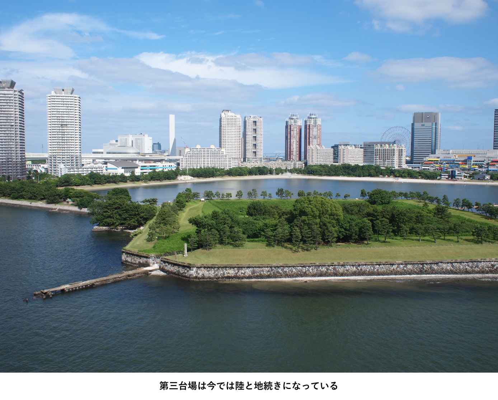
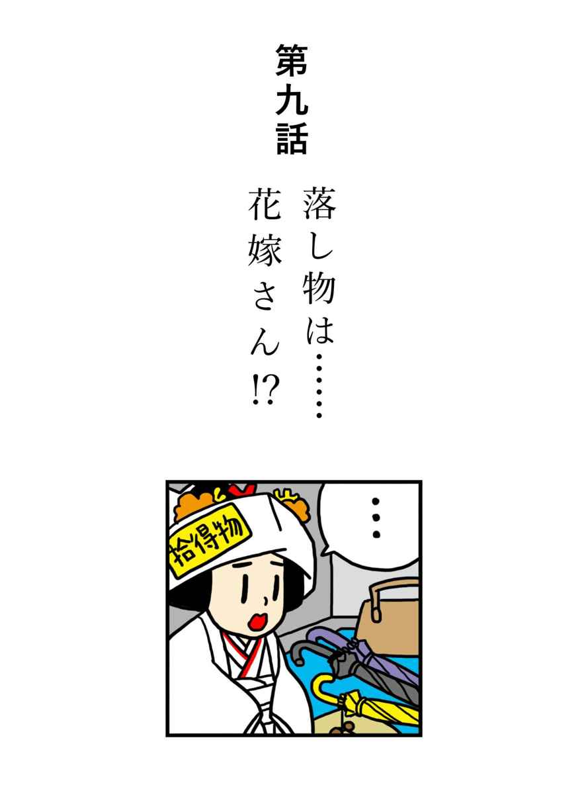

| 昔の新聞点検隊 戦前編 (朝日新聞デジタルＳＥＬＥＣＴ) | |
| 朝日新聞 | |
| (2014) | |
初出 「ことばマガジン」２０１０年７月27日〜２０１２年12月11日
はじめに
「昔の新聞点検隊 戦前編」を手にとっていただき、ありがとうございます。
「昔の新聞点検隊」は朝日新聞校閲センターが執筆しているウェブサイト「ことばマガジン」の一コーナーです。
新聞は時代によって大きく変化しています。１８７９（明治12）年の朝日新聞（大阪）の創刊号は、紙の大きさは今の３分の１ほどで、わずか４ページでした。時代を経るに従って、記事に見出しが入ったり、写真が入ったりして今の形に近づいていきます。全ての文章の末尾に「。」を入れるようになったのは戦後のことです。また、以前は事件の容疑者の名前は呼び捨てで書いていましたが、「○○容疑者」と呼称をつけるようになったのも１９９０年と比較的最近です。
昔の新聞に、今の校閲記者が現代の基準で指摘をしつつ、その記事を現代風に書き直してみたら、そのギャップが浮き彫りになって面白い読み物になるのでは......と始めたのがこの昔の新聞点検隊のコーナーです。
この連載では戦前の珍事件・Ｂ級ニュースを題材にしたよりすぐりの記事を12本集めました。「こんな事件、今では新聞に載せないよね」「この事件がこんなに大きく載っちゃうの？」など、今と昔の新聞の違いを楽しんでいただけるとうれしいです。
朝日新聞校閲センター・次長 山村隆雄
〈おことわり〉
●掲載記事紙面について
本書では各章の冒頭で、戦前の朝日新聞の掲載紙面画像を紹介し、現在の朝日新聞の校閲基準から見て修正すべきと思われる場所に朱字で直しを入れています。
朱字を入れたのは、主な修正点であり、すべてではありません。現在の表記基準が認めていない漢字の音訓や、当時は入れていなかった句点を入れる等については、原則として記入を省いています。
また人権に配慮して、画像の一部を修正したり、個人情報を伏せたりした場合もあります。
●「当時の記事」について
各章の冒頭で、紙面からテキストを書き出して紹介しています。その際、原文どおりに表記することを原則としましたが、読みやすさの観点から、
・漢字の旧字体は新字体に
・句点（。）を補った方がよいと思われる部分には１字分のスペース
・当時大文字の「ゃ」「ゅ」「っ」等の拗音、促音は小文字に
等の手を加えています。ご了承ください。
はじめに
第一話 金のうろこ、盗まれる
第二話 金鯱の正体、金助の自白
第三話 ハチ公は名犬と訂正します
第四話 初誤報は罰金刑
第五話 借りてないけど返します！
第六話 浮世離れの夕涼み
第七話 映画館でのデート解禁！
第八話 女を泣かせるやつは許さん！
第九話 落とし物は......花嫁さん！？
第十話 昼のドンが早すぎる！
第十一話 「洗髪」女の正体は
第十二話 公衆電話のため息
執筆者一覧
●当時の記事（前ページ）
無残 名古屋城の金鯱 鱗五十八枚剥奪さる
四十万円の空中怪盗 〝大凧の金助〟以来
【名古屋電話】 天下に誇る名古屋金鯱城金の鱗が五十八枚盗まれて居るのを発見 センセイションを巻起した――名古屋市では昨年八月頃から築城の謎を解くべく櫓を組んで大規模な天守閣の実地調査を進めて居るが七日早朝名古屋市の技手が天守閣の大櫓に上り金鯱の調査に取りかかると雄の金鯱の金網が一尺四方破られ胴体の金の鱗五十八枚がペンチで剥ぎ取られて居るのを発見、直に所轄新栄署へ急報、同署では名古屋地方検事局、県刑事課の指揮を仰ぎ永山県刑事課長、中村新栄署長、小宮博士など現地に急行、城内の拝観者の出入を禁止して実地検証を行ふ一方全署員を招集、犯人捜査に大活動を開始した、検証の結果現場に残されて居る痕跡から見て鱗を剥奪したペンチと金網を切り破ったペンチは同一で犯人は城の事情に通じたもの一名と推定されて居る、尚金鱗の大きさは掌の半分位、銅板に金が張ってあり損害約四十余万円と見られてゐる、金鯱は雌雄二つで小判で一万七千九百七十五両かかって居り一枚の鱗は大判一枚を切って造られて居るが実見者の談によると今度盗まれた北の雄の方は高さ七尺七寸、然も総身の鱗は悉く黄金でその重さ二百七十貫あったとの事である、盗難は大凧に乗って盗んだといふ柿木金助の伝説以来はじめてである【写真は盗難の鯱】
（１９３７〈昭和12〉年１月８日付 東京朝日 夕刊２面）
●解説
名古屋といえば名古屋城、名古屋城といえば金の鯱。その鯱から、うろこが盗まれた!!
名古屋城は２０１０年、１６１０（慶長15）年に徳川家康が建て始めてから４００年を迎えました。名古屋の前は清須に城と町がありましたが、低地であるため木曽川のはんらんや水攻めを受けるおそれがあり、軍事的に適した立地とはいえませんでした。そこで目に留まったのが、がけや沼があり「天然の要害」といえる名古屋。さらに東海道や熱田湊といった陸海の交通や比較的広大な土地を持っていたことから、城下町に適していました。
名古屋城と聞いて多くの人が思い浮かべるのが、金の鯱でしょう。今でこそ鯱をいただく城は少なくなりましたが、昔はそうではありませんでした。「インターネットミュージアム」の名古屋城紹介サイトによると、織田信長の安土城、豊臣秀吉の大坂城、徳川家康の江戸城などにも金の鯱は飾られていましたが、火災にあったり破壊されたりしてなくなってしまったようです。
今回は、名古屋城の金の鯱からうろこが58枚も盗まれた、というセンセーショナルな事件を取り上げます。さっそく違和感を覚えたあなたは、なかなか鋭いです。記事では「センセイション」としていますが、現在の新聞では「センセーション」とします。これは日本新聞協会が、原語で二重母音の「エイ、オウ」は原則として長音とみなす、としているからです。sensationの場合はａの発音が[ei]なので二重母音にあたります。
この「センセーション」のくだりですが、事件自体が驚きですので、あえて入れる必要はないと思われます。
画像をご覧いただくとわかりますが、この時代はルビの振り方がとても自由です。現在では「熟語全体に付ける」のがルビの原則ですが、本文冒頭の「名古屋」は「古」にだけ振られており、しかも「こ」。今回の記事に出てくる「名古屋」はすべてこのパターンでルビが振られています。その理由は想像するしかありませんが、一文字一文字活字を手で拾っていた時代です。早さを優先して自分の覚えているルビ付きの「古」を拾ってしまったのかもしれません。
「直に所轄新栄署に急報」は重複表現。「急報」自体が「急いで知らせること、急の知らせ」（広辞苑）の意味ですから、「通報」とするか「直に」を抜くとすっきりします。「一番最初」「違和感を感じる」「過半数を超える」なんていうのも、よく考えると変ですよね。
「小宮博士など」を「小宮博士ら」と直す朱を入れましたが、「同じ意味じゃない？」と疑問に思う人もいるかもしれません。確かに「など」も「ら」も漢字にすれば「等」ですし、名詞に付いて複数を表すという役割もだいたい同じです。しかし「など」には「軽んじて扱う」という否定的なニュアンスがあるため、朝日新聞では人につく場合「ら」や「たち」を使うようにしています。
ところで突然登場するこの「博士」、一体何者でしょうか。「県刑事課長」や「新栄署長」は警察関係者だとすぐわかりますが、「博士」が警察とどんな関係があるのか、なぜ「現地に急行」したのかよくわかりません。現在なら、「○○に詳しい」と専門分野を示したり、「○○大学教授」のように所属を明らかにしたりするところです。
人を数える「人」と「名」も、ほとんど同じ意味といっていいでしょう。２０１０年４月26日に放送されたＮＨＫ総合テレビ「お元気ですか 日本列島」の「ことばおじさんの気になることば」コーナーでは、「人」は「単純に人数を数える場合」、「名」は「改まった表現をする場合、定員・定数のある場合」と説明した上で、「どちらを使っても問題はないので、自分の感覚で選んで使えばよさそう」と結論づけていました。つまり「人」と「名」には、厳密な使い分けがあるわけではないようです。ただし新聞は、原則として「人」で統一しています。
記事によると、盗まれたうろこの大きさは「手のひらの半分くらい」。具体的なイメージが浮かんで良さそうですが、実際どのくらいのサイズだったのでしょう？ 分量が多いのでここでは取り上げていませんが、この記事は左側に続きがあります。それによると「鱗の長さが大きいのは五寸五分から七寸五分、小さいのでも三寸五分から二寸五分はある」。最小と最大の値をメートル法に換算すると「７・５〜22・７センチ」になります。「手のひら」というとふつう手首から指の付け根までを指しますから、小さい方をとっても「手のひらの半分くらい」と言うには大きいですね。「片手に載るくらい」などとしてはどうでしょうか。
最後に登場する柿木金助、見出しにも使われていますがどんな人物かご存じでしょうか。１７８３（天明３）年に大坂で上演された初代並木五瓶の「傾城黄金鯱」などに描かれる、大凧に乗って空を飛び、名古屋城の鯱のうろこ３枚を盗むという、何とも華麗な怪盗です。芝居に限らず、明治期には毎日新聞の連載小説「享保実譚 花の春日野」にも登場しました。「大凧に乗ってうろこを盗んだ」というのはあくまで伝説ですが、柿木金助という人物は実在したようです。濃尾の各地で盗みなど犯罪を重ねたため、名古屋の町じゅうを引き回しの上、はりつけ獄門に処されたといわれています。
犯人は本当に、金助のように凧に乗ってうろこを盗んだのでしょうか。それとも......？ 事件の顛末は、第二話で明らかになります。ご期待下さい。
●現代風の記事にすると......
無残 名古屋城の金の鯱 うろこ58枚盗まれる
40万円の空中怪盗 〝大凧の金助〟以来
【名古屋電話】天下に誇る名古屋城の金の鯱から、うろこ58枚が盗まれているのが見つかった。センセーショナルな犯罪に、市民に驚きが広がっている。
名古屋市は昨年８月から、名古屋城築城の謎を解くため、やぐらを組んで大規模な天守閣の実地調査を進めている。今月７日早朝、同市の技術者が天守閣の大やぐらに上り金の鯱の調査にとりかかると、雄の鯱を覆う金網が約30センチ四方破られ、胴体の金のうろこ58枚がペンチではぎ取られているのを見つけて、すぐに新栄署に通報した。
同署は名古屋地方検事局、県刑事課の指揮を仰ぎ、永山県刑事課長、中村新栄署長、○○に詳しい小宮博士らが現地に急行、城内の拝観者の出入りを禁止して実地検証を行う一方、全署員を招集し、捜査を開始した。
検証の結果、現場の痕跡からうろこをはぎ取ったペンチと金網を切り破ったペンチは同じもので、犯人は城の事情に詳しい者とみられる。うろこは銅板に金が張ってあり、片手に載るくらいの大きさ。被害額は約40万円とみられる。鯱は雌雄二つあり、小判で１万７９７５両分が使われているという。１枚のうろこは大判１枚を切ってつくられていて、実際に見た人によると、今回盗まれた北の雄の方は高さ約２・３メートル、全身のうろこはすべて黄金で重さは約１トンになるという。
名古屋城の鯱からうろこが盗まれるのは、大凧に乗ってうろこを盗んだといわれる柿木金助の伝説以来という。【写真は被害にあった鯱】
●当時の記事①（前ページ）
金鯱の正体
損害額は五六千円
【名古屋電話】 中京が誇る国宝建造物の名古屋城の表徴であるこの「金の鯱」は慶長十五年前田、毛利、加藤、福島、黒田、細川諸侯の献金によって作られた当時は金色燦として輝いたものださうだが今はそのおもかげはなく時代の流れと共に数度の修復により金の厚さもその都度薄くなり今回の事件で名古屋市並に愛知県刑事課の共同鑑定の結果、鱗の裏面には殆ど全部鋳造打付けの年号が入って居り鱗の厚みは今までの伝説に反して意外に薄く銅の上に紙より薄い金の薄板を張ったもので鱗によっては葉書二枚の厚み位なのもあるが純金分は非常に少く、純金量の比較的多い鰭や尾部は災難をのがれ盗まれた五十八板の総重量は七百四十一匁余で、損害は予想程でなく約五六千円に過ぎなかったとはいへ今では神聖なものとして一種の信仰化してゐたものである
（１９３７〈昭和12〉年１月８日付 東京朝日 夕刊２面）
●当時の記事②（次ページ）
暗の天守閣から 市中を俯瞰す
案外脆い鯱のうろこ 怪盗自白
【大阪電話】 ○○○は初め取調に口を緘して自供せず「入所前上海から密輸した金を阿倍野の墓地に埋めて隠して置いたのを掘り出した」と逃げてゐたが峻厳な追究に遂に二十八日朝に至って「私がやった」と自供 重荷を下ろしたやうに軽い口調で 金鯱を見た時、あの金を盗むことが出来れば母親を喜ばし行方の判らない妻子を探すことも出来るしそれをもとでに商売でもやって親子揃って気楽に暮らせると考へたのです
天守閣の屋上に漸く匍ひ上って名古屋市を見下した時空は真暗闇だったが足許から誰かにすくひ倒される様な恐怖を胸一杯に感じた 鯱の金が固くてはがしにくからうとペンチではがしたところ案外もろく腐った魚のうろこの様に指でぽろぽろ簡単に脱落したものの名古屋駅から大阪行の汽車に乗込むまでは全くの夢中だった（後略）
（１９３７〈昭和12〉年１月29日付 東京朝日 朝刊11面）
●解説
今回は「第一話 金のうろこ、盗まれる」の解決編。発生から３週間後に、容疑者は大阪で捕まりました。この事件を「大胆！ 空中夢を実現」の大見出しをつけて社会面で大きく扱っています。中でも興味深い二つの記事を見ていきましょう。
まず「金鯱の正体 損害額は五六千円」の見出しの記事です。前回扱った、事件発生時の記事では、被害額は「約40万円」。ずいぶん安くなってしまいました。記事によれば、当時考えられていたよりうろこは薄く、銅の上に張られていたのは「紙より薄い金の薄板」だったようです。しかも純金量が多いひれや尾は手つかずでしたから、被害額を大きく修正せざるをえなかったというわけです。
記事はうろこが薄くなった理由を「時代の流れと共に数度の修復により金の厚さもその都度薄くなり」と説明していますが、名古屋城の象徴である鯱の金を、なぜそこまで節約する必要があったのでしょう？
１９８１年の朝日新聞日曜版に、この謎を解く記述を見つけました。名古屋城を所有する尾張藩は財政が厳しくなったために、鯱の金を純度の低いものに鋳なおしてしまったというのです。しかも３度にわたってです。
初めは８代将軍徳川吉宗が改革を進めていた享保15（１７３０）年。御三家の筆頭である尾張藩はまだ財政難ではありませんでしたが、その格式の高さゆえに交際費や土木建設費がかさみ、鯱に手を出してしまいました。さらに約１００年後の文政10（１８２７）年、弘化３（１８４６）年にも改鋳をして、紙面当時のような状況になってしまったようです。
明治時代には、鯱は天守閣から下ろされていた時期もありました。日本各地の博覧会や、明治６（１８７３）年のウィーン万博に出展されたためです。金の純度が低くなってしまったとはいえ、全身黄金のその姿はまだまだ人々の目を引いたということでしょう。「昭和の金助」が目をつけたのも、無理はありません。
ちなみに現在名古屋城にある鯱は、このときうろこが盗まれたものではなく２代目。初代は、昭和20（１９４５）年５月の空襲で雌雄とも焼けてしまいました。雌のほうは燃え殻が残ったため、その後茶釜として生まれ変わり、現在も残っています。
さて一つ目の記事は、あまり直すようなところはありませんが、うろこを「五十八板」と数えているのが少し気になりました。辞書を引いてもこうした使い方は見あたりませんし、単に「枚」でいいでしょう。あるいは同じ木偏なので、活字を拾い間違えたのかもしれません。
続いて、二つ目の記事を見ていきましょう。供述によると容疑者は、以前服役していた際に妻子と離ればなれになってしまい、見つけ出すためのお金が必要だったようです。暗闇の中、恐怖におびえながら天守閣によじ登り、鯱のうろこをペンチではがして夢中で逃げたというその様子は、「柿木金助」の華麗なイメージとはおよそかけ離れています。
こちらの記事は、現代の基準で見ると直したいところがちらほら。
まず「隠して置いた」の「置」は平仮名に。これは「補助動詞の場合は平仮名で書く」という朝日新聞の決まりがあるためです。「年々増えて行く」の「行く」や「だんだん赤くなって来る」の「来る」も同様で、実際に「行ったり来たり」するわけではないので、平仮名にしています。
しかしこの「追及」、朝日新聞の事件記事では、容疑者に対して使うことはめっきり減りました。逮捕された「容疑者」はあくまで「容疑」の段階で、まだ罪が確定しているわけではありません。「追及」を使うと容疑者が真犯人であるかのような印象を与えてしまうかもしれません。裁判員裁判が始まった２００９年からは特に、読者に予断を与えるような表現はなるべく使わないよう、細心の注意を払っています。
同音異義語をもう一つ。「妻子を探す」は「捜す」にしましょう。新聞では「探す」と「捜す」を使い分けています。「捜す」が「見えなくなったものをさがす」のに対し、「探す」は「欲しいものをさがす」といったニュアンス。「いま独身で、妻が欲しい」という意味の時は「探す」ですが、もともと妻子がいる場合は「捜す」を使うことにしています。
「昭和の金助」は逮捕後、列車で名古屋に身柄を移されます。そのときの記事の見出しが「〝金助〟おどおど 駅頭を埋めた好奇の大観衆 金鯱犯人名古屋へ」。この事件がここまで注目されたのは、やはり金鯱の威光がなせるわざでしょうか。
●現代風の記事にすると......①
金鯱の正体
損害額５千〜６千円
【名古屋電話】中京が誇る国宝建造物・名古屋城の象徴「金の鯱」は、１６１０（慶長15）年に前田、毛利、加藤、福島、黒田、細川各大名の献金によってつくられた。当時は金色がきらきらと輝いていたそうだが、今はそのおもかげはなく、時代の流れとともに数度の修復を重ね、そのたびに金は薄くなっていった。
今回の事件で名古屋市・愛知県刑事課が共同鑑定した結果、うろこのほとんどには裏面に鋳造打ち付けの年号が入っていた。うろこは伝説に反して意外に薄く、銅の上に紙より薄い金の薄板を張ったもので、はがき２枚ほどの厚みのものもあり純金は非常に少ない。純金量の比較的多いひれや尾は無事だった。盗まれた58枚の総重量は約２７８０グラムで、損害は予想ほどでなく約５千〜６千円だった。金額は別にしても、金の鯱は神聖なものと信じられているのだ。
●現代風の記事にすると......②
暗闇の天守閣から 市中を見下ろす
意外にもろい鯱のうろこ 容疑者供述
【大阪電話】容疑者は最初、取り調べに口を閉ざし、犯行を認めなかった。「入所前、上海から密輸した金を阿倍野（大阪）の墓地に埋めて隠しておいたのを掘り出した」と話していたが、28日朝「私がやった」と認めた。重荷を下ろしたように軽い口調で「金の鯱を見て、あれを盗むことができれば母親を喜ばせ、行方の分からない妻子を捜すこともできる。それを元手に商売でもやって、親子そろって気楽に暮らせると考えた」。
「天守閣の屋上にやっとはい上がって名古屋市を見下ろした時、空は真っ暗だったが、足元から誰かにすくい倒されるような恐怖心で胸が張り裂けそうだった。鯱の金は硬くてはがしにくいだろうと思いペンチを使ったが、意外にもろく腐った魚のうろこのように指でぽろぽろと簡単にはがせた。しかし名古屋から大阪行きの汽車に乗り込むまでは、無我夢中だった」（後略）
●当時の記事①（前ページ）
いとしや老犬物語
今は世になき主人の帰りを待ち兼ねる七年間
東横電車の渋谷駅、朝夕真っ黒な乗降客の間に混って人待ち顔の老犬がある、秋田雑種の当年とって十一歳の――ハチ公は犬としては高齢だが、大正十五年の三月に大切な育ての親だった駒場農大の故上野教授に逝かれてから、ありし日のならはしを続けて雨の日雪の日の七年間をほとんど一日も欠かさず今はかすむ老いの目をみはって帰らぬ主人をこの駅で待ちつづけてゐるのだ、ハチ公にとっては主人の死などはあり得ない事実に違ひないのだ、行きずりの人々もいつしかこの事情を知って、ハチ公の心根を憐れみ売店でコマ切れや何かを買い与へて慰めてゆく人もある、浅草辺の人が一度上野氏の家族からもらって養育したことがあるさうだが、渋谷の土恋しくその日のうちに一目散ににげかへって来て、今では近所の植木屋さんが飼主となり、ハチ公の死後の埋葬料までついてゐるといふ話 この人気もののハチ公の、も一つの美徳は喧嘩の仲裁だ 弱いもの虐めをしてゐる犬があるとハチ公は黙ってその巨大な背中を喧嘩の真中へ割りこんで行く、それでもきかぬ強気な奴に対してはアングリ一かみ、だが尻っ尾をまいてにげて行くのは決して追はない――とは一寸風変りな親分である
（１９３２〈昭和７〉年10月４日付 東京朝日 朝刊８面）
●当時の記事②（次ページ）
ハチ公は名犬
四日紙上「いとしや老犬物語」と題した老犬ハチ公の記事中ハチ公を「秋田雑種」としたのは間違ひでハチは愛犬家の間では有名な秋田の純種として知られてゐる名犬ですから老ハチ公の名誉のため右訂正します。
（１９３２〈昭和７〉年10月８日付 東京朝日 朝刊７面）
●解説
おそらく日本一有名な秋田犬、ハチ。この犬が日本中に知られるようになったのは、朝日新聞のこの記事がきっかけでした。ご存じの通り、渋谷駅前にある銅像は今も、有数の待ち合わせスポットです。雨が降ろうと雪が降ろうと駅で飼い主を待ち続けたハチのエピソードは、１９８７年に「ハチ公物語」の題で映画化されて大ヒット。２００９年には米ハリウッドでもリメークされました。主演のリチャード・ギアが来日し、渋谷のハチ公像と対面して話題になったのは記憶に新しいところです。
ところで、校閲センターで働く私たちが恐れるもの。それはおわびや訂正です。今回の記事は、掲載の４日後に訂正が出ています。まず、この訂正を検証してみたいと思います。「秋田雑種」と紹介されたハチが実は純種の秋田犬だったというものですが、きちんと校閲していればこの訂正は防げたのでしょうか？
秋田犬は日本犬の一種で、この記事が出る前年の１９３１年、日本犬７種のうち最も早く天然記念物に指定されました。外見上の特徴として、雄の標準体高が67センチ程度と大型で、立ち耳、巻き尾であることなどが挙げられます。古くからマタギ猟に利用された狩猟犬がルーツとされ、江戸時代から闘犬がさかんだった秋田・大館で明治以降に大型化が進んだと言われています。
横から撮られたハチの写真を注意深く見ると、しっぽはくるりとまるくなっていますが、耳の様子ははっきりとせず、また、比べる物が写っていないために体の大きさもわかりません。当時、ハチはそれほど有名だったわけではなく、新聞に載るのもこれが初めてですから、どのような血統の犬であるかなどは調べようがありません。そもそも、日本犬保存の機運が高まってきたのは昭和初期になってから。この記事が掲載された１９３２年は、ちょうど日本犬保存会という団体が日本犬血統書を発行し始めた年に当たります。同会が「秋田犬標準」を制定したのが１９３４年ですので、原稿を読んで「ハチは秋田雑種である」ということに疑いを持つのは難しいと思います。校閲では救えない誤りだったと言えるでしょう。
この訂正では「純種だから名犬」としていますが、今の辞書では「名犬」は「りっぱな、かしこい犬」（三省堂国語辞典）などとしています。名犬の意味も変わってきているようです。
気を取り直して、記事を点検していきましょう。ハチの飼い主は日本の農業土木学の創始者、上野英三郎氏です。「上野教授」とあるところは「上野英三郎教授」とフルネームで表記してもらいましょう。また、勤め先の「駒場農大」は、おそらく当時よく使われた通称だったのだと思われますが、記事では正式名称「東京帝国大学農学部」と書いた方がよいでしょう。
この記事では、飼い主の上野教授が「大正十五年三月」に亡くなったように書かれていますが、人名辞典などで調べてみると、１９２５（大正14）年５月に大学で倒れ、53歳の若さで急逝したことがわかりました。生後数十日のハチを飼い始めたのは１９２４年の初めごろで、ハチが上野教授と一緒に暮らしたのは１年半にも満たない短い期間だったのです。かわいがられて育ち、すぐに信頼関係が生まれたのでしょう。これほど深いきずながたった１年と数カ月ではぐくまれたことには驚かされます。
記事にも書かれている通り、飼い主と死別したハチはしばらく浅草に住む人に引き取られていたようなので、「大正十五年三月」というのは、近所の植木屋さんが新しい飼い主となり、そこから渋谷駅に通い始めた時期なのかもしれません。そうだとすれば待ち続けた期間は６年半ほどになり、「七年間」とするには少し短いですね。そのあたりは取材した人しかわからないこと。書いた記者に問い合わせ、改めて確認してもらうしかありません。
行きずりの人々がハチに与えた「コマ切れ」。犬にやるのですから、何かの肉の切れ端なのでしょうが、「肉の」などと補った方がわかりやすいのではないでしょうか。それにしても、売店でわざわざ買ったものをもらえるなんて、ハチの人気がよくわかります。
広く名を知られるようになったハチは、以後、写真とともに何度も紙面を飾りました。銅像計画が報じられれば全国から手紙や寄付が寄せられ、衰弱して改札口に姿が見えないと花束や見舞金を持った訪問客が大勢集まったようです。１９３５年３月８日朝、渋谷区内の路上で生涯を終えたハチ。午後１時には僧侶が読経に訪れ、翌日は銅像が花で埋まったそうです。追悼の手紙は５００通を超え、銅像前で営まれた告別式には焼香をする人で行列ができたとも報じられています。２日後の紙面には、通夜に訪れたハチの息子クマの姿が写真入りで掲載されました。
３月９日付の記事には、ハチは死後、剥製にされて国立科学博物館で保管されることになったとありました。もしかすると、今でもハチに会うことができるのでしょうか。東京・上野の同館を訪ねてみると......。確かにいました！ 南極・昭和基地で極寒の冬を生き延びた樺太犬ジロの前に、「ハチ号」と刻印された金属プレート付きの革ベルトを胴に巻き、堂々とした姿で立っています＝次ページの写真。老年のハチは左耳が垂れていましたが、秋田犬らしく両耳ともピンと立ち、尾もきれいに巻かれていました。同館広報担当の高橋美樹さんによると「死んだときの衰弱した姿ではなく、若いころの姿のようですね。当時の剥製師さんは、肉付きをよくすることで元気だったハチを再現しようと考えたのでしょう」。
「当年とって十一歳の」とありますが、同館などによるとハチは１９２３年の秋生まれ。記事ではちょっと年をとりすぎているようです。満年齢だと、このときまだ９歳ぐらい。ハチの死を伝える１９３５年３月９日付の記事には「十三歳の寿命を全うした」とありますので、当時は数えで計算していたのでしょう。最初に記事になったときには、ハチの生年がはっきりわかっていなかったのかもしれませんね。記事に年齢が出てくる場合、必ず確認しなければならないのが生年月日です。新聞では、すべての記事が、書かれたその日に掲載されるとは限りません。紙面になるまでの間に誕生日を迎えて年齢が変わってしまうこともあり得ますので、点検する際には「何日生まれか」までの確認が欠かせないのです。
実は、ハチは今も渋谷の街を走っています。渋谷区のコミュニティバスの正面が、かわいらしい犬の顔になっているのです＝次ページの写真。その名も「ハチ公バス」。さらに、バス停や車体の横にも左耳が垂れたハチのイラストが描かれています。死後75年を経た２０１０年現在も、ハチが多くの人に親しまれている証しですね。
●現代風の記事にすると......①
けなげな老犬物語
今は亡き主人の帰り 待ちわびて７年
朝夕多くの乗降客が行き交う東横電鉄渋谷駅（東京都渋谷区）に、人待ち顔の老犬がいる。名前は「ハチ」。９歳ぐらいになる秋田犬の雑種で、犬としてはもう高齢だ。大切に育ててくれた東京帝国大学農学部教授の上野英三郎さんは１９２５（大正14）年５月に亡くなったが、ハチは７年もの間、雨や雪が降ろうとも、老いでかすむ目を見開いて毎日変わらず帰らぬ主人を待ち続けている。
ハチにとって、主人の死などあり得ないのだろう。通りがかる人の中には、この事情を知ってハチの心情を察し、売店で買った細切れ肉などを与える姿も見られる。一度、浅草周辺の人が上野さんの家族からハチを譲り受けようとしたことがあったが、渋谷の街を恋しがり、その日のうちに一目散に逃げ帰ってきてしまった。今は近所の植木屋さんが飼い主となり、死後の埋葬料まで用意されているという。
ハチが人気を集めるのには、もうひとつ理由がある。けんかの仲裁に入るのだ。弱いものいじめをしている犬がいると、黙ってその巨大な体で真ん中へ割りこんでいく。それでもきかない強気な犬には「ガブリ」とひとかみ。しかし、しっぽを巻いて逃げていく犬は決して追わないという、ちょっと風変わりな親分なのだ。
●現代風の記事にすると......②
訂正
４日付「けなげな老犬物語」の記事で、ハチが「秋田犬の雑種」とあるのは「秋田犬」の誤りでした。訂正します。ハチは純種でした。
●当時の記事①（前ページ）
○本月二日第六号に贋札を製へし人名を●●庄吉と記せしハ宗吉の誤り又同八日十一号医事会同社云々会毎に社中役員改正と記せしハ誤聞につき取消し
（１８７９〈明治12〉年２月12日付 朝刊４面）
●当時の記事②（参考・訂正元の記事。次ページ）
○昨年以来半円札の偽造が多いので誤まって受取り損失をせし者間ありしが横堀三丁目●●庄吉なる者天満辺にて買物の際偽造せし事が露顕し遂に査公の手数となり警察本署に拘留せられ当今専ぱら御吟味中なり
（１８７９年２月２日付 朝刊２面）
●当時の記事③（参考・訂正元の記事。次ページ）
（１８７９年２月２日付 朝刊２面）

●解説
「訂正」。この２文字、新聞記者が最も恐れる言葉と言っても過言ではありません。新聞は正確な情報を読者に届けるのが使命。訂正記事を出すのは、誤ったことを伝えたということですから、書いた記者は穴があったら入りたくなるほど恥じ入り、後悔します。それは、誤りを見逃してしまった校閲記者も同様。いえ、私たちは正確な報道の最後のとりで、「守護神」なのですから、訂正を出すような誤りを見逃すことは、仕事をしていないに等しいとも言えます。99個の間違いを見つけても１個見逃したら意味がない。このような心持ちで日々働いています。書いた記者以上に責任を感じることもよくあります。いつか、校閲記者の背後でぼそっと「訂正」とつぶやいてみてください。みな一様にビクッとして冷や汗顔で振り返るはずです。
さて、我々にとって恐怖の訂正ですが、ふと、朝日新聞で最初の訂正はどんなものだったのだろうと思い立ち、データベースを振り返ってみました。今回当時の記事①で紹介した記事は、訂正記事としては通算３本目のようでしたが、訂正する元の記事の発行日付が最も早かった（１８７９〈明治12〉年２月２日、創刊６号）ため、今回取り上げてみました。現在でもやってしまいがちな誤りなのですが、創刊早々、騒ぎとなってしまったようです。
間違いを含んだものをわざわざ紹介するのは恥の上塗りのようでもありますが、あくまで１３０年以上前のものということで、寛大なお心でご覧いただければ幸いです。
２件の別の記事について訂正していますが、現在では、まずそこでアウト。訂正記事は、同時に発生したときも個々の記事ごとに「訂正」のロゴをつけて掲載します。１本ずつ分けて書くことにしましょう。
さらに、訂正記事は訂正元の記事が載っていた面に載せるのが現在の基本形。政治面の記事なら政治面に、スポーツ面の記事ならスポーツ面に、といった具合です。今回の場合、訂正元の記事はどちらも２面に掲載されていたので、同じ面に訂正記事も載せたいところです。しかし、当時は今ほど「○○面」という区別がないので、最終の４面に押し込んだものと思われます。それならせめて、日付と号数だけではなく、何ページ目に入っていた記事なのかを入れてもらうことにしましょう（なお、現在の紙面では号数は書いていません。すでに４万６千号を超えていて区別もつかないですよね）。
現在だと、掲載日の後にその時の見出しを再掲して、どの記事を訂正するのか分かりやすく示します。しかし、この時代はまだ見出しがないので、原文のように説明するのは許容します。ただ、訂正する文言は、かぎかっこで明確にします。庄吉さんが無関係であることも書き添えるとより良くなりますね。
とにもかくにも、きちんと「訂正します」という文言を入れて、誤りだったことを明確に示さなければなりません。「......の誤り」「......は誤聞につき取り消し」で終わってはなんとも横柄です。もちろん当時の新聞は、より多くの情報を早く広く伝えることが第一の使命であったでしょうから、今ほど正確性は求められていなかったのかもしれません。それでもこちらが間違えたのですから、丁寧に書いてほしいものです。
この訂正記事や、訂正元の記事は、漢字にルビがふられていますが、漢字本来の音訓ではないですね。「偽造＝にせ」「御吟味＝おしらべ」など、近い意味で平易な言葉に直してルビをふっています。現在では原則こういうことはしないので朱を入れたいところですが、当時は一般市民が読んで意味を分かってもらうことが、第一の目標ですから、今回は指摘を見送ります。
植字ミスなのか、記者の聞き間違いか、ニセ札作りの容疑者として誤って報じられてしまった「庄吉」さん。単なる誤字では済まされませんでした。この人物は実在し、名誉を傷つけられたとして讒謗律にしたがって朝日新聞を告訴します。讒謗律とは新聞などを主に名誉棄損防止の観点から取り締まるために１８７５（明治８）年に定められた法律。高校で日本史を学んだ方なら、この難しい漢字の並びに見覚えがありますよね。「事実の有無を論ぜず人の栄誉を害す」、つまり「事実であるかどうかにかかわらず個人の栄誉を傷つける」ことを出版行為で行った場合、罰するという、表現の自由を制限した厳しい法律でした。
今回の場合は、明らかに誤報なので反論の余地はありません。このときの編集責任者は罰金５円を裁判所から言い渡されました。これが、朝日新聞が罰せられた初めてのケースです。初誤報は、苦い記録として永遠に残ることになってしまいました。
前述したように、この頃の訂正は、特に「訂正」などとは明記せず、一般記事と同じ並びで掲載されています。ざっとデータベースをみたところ、今回の記事の少し後、２月中旬あたりから「正誤」と文頭に示して、過去の記事の誤りを訂正する体裁が見られるようになります。「訂正」を文頭に示すようになったのは１８８５年ごろから。しかしこの「訂正」と「正誤」はしばらくの間、共存します。時には隣同士で載っている例もありましたが、その使い分けははっきりとは分かりませんでした。
記事と記事の間に紛れ込ませて書いていたり、紙面の隅っこに小さく載せていたり、といった姑息な？掲載手段を経て、戦後の１９５２年前後から徐々に、文末が「訂正します」と丁寧な表現に。そして現在のように分かりやすい「訂正」のロゴを掲載するようになったのは１９５４年３月あたりからのようでした。歴史を重ねるごとに、新聞の情報の重要性を自認し、正確な情報を伝えることへの責任感が増していったのだと思われます。体面よりも、誤りはきちんと認め、正しい情報を伝え直すんだという気概が感じられます。
訂正のない紙面を目指して、心を新たに日々の校閲業務に励みたいと気を締め直した筆者でした。
●現代風の記事にすると......①の前半（当時の記事①を２本に分割）
２日付２面に掲載した紙幣偽造事件の記事で、逮捕されたのが「●●庄吉」容疑者とあるのは「●●宗吉」容疑者の誤りでした。●●庄吉さんは無関係でした。訂正します。
●現代風の記事にすると......①の後半
８日付２面に掲載した医事会同社の集会の記事で、「会ごとに役員改正の件が議論される」とあるのは誤りでした。この部分を取り消して訂正します。
●現代風の記事にすると......②（訂正元の記事）
昨年から偽造半円札が出まわっている問題で、誤って受け取ってしまい損害を被る人も少なくなかったが、このほど大阪府警は●●庄吉容疑者＝横堀３丁目＝を逮捕し、事情を聴取している。●●容疑者は、天満周辺で買い物をした際に、偽造紙幣を使って気付かれたという。
●現代風の記事にすると......③（訂正元の記事）
９日、大阪・石町の三橋楼で医事会同社の集会がある。会ごとに役員改正の件が議論されるという。
こんな記事も
せっかくなので、今回取り上げた記事の前に出た２本の訂正記事についても見てみましょう。訂正記事といっても、当時は「訂正」とは言っていないようで、体裁等もバラバラ。私が調べた限り、紙面の内容を訂正した最初の例は、こちらでした（書き起こしたものを先に、紙面画像を後に紹介します）。
●当時の記事④（次ページ）
○一昨日の新聞紙尾に今日休刊の事を広告せしは甚しき間違にて今日は相変らず発兌致します故此叚厚く御詫申上候
（１８７９年２月４日 朝刊４面、創刊７号）
●当時の記事⑤（参考・訂正元の記事。次ページ）
○明日は月曜日 明後日は新年班幣祭に付両日間休業
（１８７９年２月２日 朝刊３面、創刊６号）
訂正ではなく「社告」として、「おとといの紙面で『あさって（＝４日）は休み』と書きましたが、甚だしい間違いでした。おわび申し上げます。今日も変わらず発行します」と述べています。今なら完全に「おわび」ですね。休刊のお知らせを忘れることは、まれにあるかもしれませんが、休刊でもないのに休刊を宣言するのは聞いたことがありません。
その「一昨日の新聞」である第６号に、「明日は月曜だから休み、あさっては新年班幣祭だから休み」と、今でいう「おことわり」を入れていたんですね。
創刊当初の紙面を見てみると、紙面は全部で４ページ。１ページは３段。最後に社の住所などが載っており、「本社新聞定価○一枚一銭○一ケ月前金拾八戔○大祭日及毎月曜日休業...」と紹介しています。当時の定価は１枚１銭、１カ月18銭だったようですね。そして大祭日と毎週月曜日は休みとしています。
大祭日とは、いわゆる「祭日」で、天皇が行う重要な祭祀が行われる日。新嘗祭（11月23日、現在は勤労感謝の日）や先帝がなくなった日（この時は孝明天皇崩御日で、１月30日）などがありました。しかし、この「新年班幣祭」は、大祭には含まれていないようです。班幣祭とはおそらく「祈年祭」のことではないかと思います。旧暦２月４日に行われていたようなので勘違いしてしまったのでしょうか。すでに新暦になっているこの頃の祈年祭は２月17日。１９０８（明治41）年の制定ではありますが「皇室祭祀令」によると、大祭ではなく小祭扱いだったようです。
創刊から間もない頃の混乱が生んだと思われる、この珍訂正が最初でした。
次に載った訂正記事は、社告ではなく記事そのものの内容に関するものでした（次ページ）。
●当時の記事⑥（前ページ）
○第八号に権衡を以て釣上てお目に掛けた松島仲の町稲妻楼に於てカネサの一楽云々の件ハ稲妻楼主并に一楽妓より事実一切無之よし御弁駁がありました故謹で取消と致します 稲妻君も一楽妓も誠にはやお気の毒
（１８７９年２月９日付 朝刊３面、創刊第12号）
これは我が社の記事といえどもひどい内容で......、現代口語で直訳すると「第８号（＝２月５日付）にてんびんの挿絵をつけて紹介した、松島仲の町・稲妻楼でのカネサの芸妓・一楽さんについての記事は、稲妻楼主と一楽さんから、このような事実は一切無いとの反論がありました。謹んでこの記事を取り消します。稲妻楼にも一楽さんにも誠に気の毒なことをしました」となります。
訂正元の記事は紹介するのがはばかられるほどの破廉恥なもの。いわゆる「艶ダネ」とよばれるもので、簡単に言えば、男と女の情事について書いたものです。記事の内容をざっと説明すると「ある若い男が、芸妓の一楽さんを一夜のうちに自分のものにできるかどうか、稲妻楼の仲居さんと賭けをした。一楽さんはお堅いことで有名だったので仲居さんは勝ったも同然と思ったのだが、翌朝部屋を訪ねてみると男と一楽さんは同じ寝床に......」といった内容です。
こんな事実無根のことを書いておいて、「お気の毒」は非常識ですよね......。当時の記者に成り代わっておわび申し上げたいくらいです。しかしこの頃の紙面を見てみると、このような艶ダネは、挿絵入りで紙面のかなりのスペースを占めています。これは、創刊当時の朝日新聞の成り立ちから、ある程度仕方のない紙面作りではありました。
朝日新聞の創刊はこの年の１月25日。大阪の地で産声をあげました。当時すでに東京では東京日日新聞（現・毎日新聞）や読売新聞、東京絵入新聞、郵便報知新聞などが発行されており、大阪でも大坂日報（後の大阪毎日新聞で、現・毎日新聞）、大坂新報、大阪新聞などがありました。朝日は少し遅れての創刊だったのです。
当時の新聞は、政治の話を主に載せて、文章も漢語調で硬派な「大新聞」と、ちまたの事件や芸能情報をとりあげ、文章も平易な「小新聞」に分類されます。東京日日は大新聞で、読売は小新聞。大阪でも大坂日報は大新聞で、当時かなりの部数を発行していました。後発の朝日は、小新聞に進出の余地を見いだしたのだと思われます。政府を批判するような記事を載せる大新聞より、小新聞の方が発行許可を得やすかったこともあるかもしれません。
ちなみに、当時の責任者がその発行許可を求めて大阪府知事に出した書類が、社史に載っていました。その一節にはこのようにあります。
専ラ俗人婦女子ヲ教化ニ導ク者ニシテ、紙面ニ挿絵ヲ加ヘ、傍訓ヲ付シ、児童ト雖モ一見シテ其意ヲ了解シ易カラシム
「（朝日新聞は）もっぱら一般市民の教化を目指して紙面に挿絵を加え、ふりがなを付けて、児童でも一見してその内容が分かるようにする」という内容。取り消しになった、この記事などを見る限り、「市民の教化」にはほど遠い内容ではありますが......。実際は、こういったちまたの話題が読者も取っつきやすかったのだと思います。一応、１面のアタマ（トップ記事）には官報や大阪府の通達などを載せているのですが、当時の法令などは半分文語調で難解です。朝日新聞はこれにもふりがなを付けて載せており、当時の市民にとってはありがたかったのかもしれません。創刊後、ほどなくして朝日は着実に部数を伸ばし、徐々に硬軟を織り交ぜた内容の紙面へと移行していきます。
●当時の記事（前ページ）
「證文をお返しなさい」
大蔵省へ借金返済に
......かけ込んだ四十女の話
一両日前のこと大蔵省の理財局へ年齢四十前後で木綿着の質素な身なりをした婦人がかけ込みいきなり「私の借金を返すから證文も返して下さい」と現金八円を差だした。
▽ △
局長も課長も一向に見た事もない婦人だし金を貸した覚もない。といって婦人の様子が狂気者とも思へぬ真面目なものだから一時はあっけに取られて居たものの、よく聞くと、この婦人は●●●●●で間借りをしてゐる佐藤某女で、労働者宿泊所や学生奇宿舎の炊事をやったりしとる婦人だそうだ。
▽ △
最近の事、上杉博士から「日本には五十一億といふ借金（国債）がある。国民一人当り即ちお前達も八十円づつ借金してゐるんだ。お互に倹約して一日も早くこの借金を払はねばならぬ。」と聞かされたのをお前も八円借金をしてゐると聞き違へ、汗水流して貯めた金をかうして持って来たんだといふ訳。
▽ △
低利資金を融通せよとか、利子を負けろとかいふ連中は連日門前市をなしてもこんな純真な女の来訪を受けた事がないといふので、同局の連中は大喜び「これもお国のためであり自分のため」だと説いてその金で復興債券を買はせ、その後低資融通を申請してくるものに対しては、相手が一言も発しない内からこの婦人の談を持ちだし融資拒絶の好材料として居る。
（１９２６〈大正15〉年７月１日付 東京朝日 朝刊４面）
●解説
人に貸したものが返ってこない時、どうしますか？ 私なら、やんわりと催促します。では、貸した覚えがないのに「返すよ」と言われたらどうでしょう。大正時代の最後の年、とある義務感から大蔵省（現・財務省）にかけ込んだ女性の話です。
正確な日付はわかりませんが、この記事は７月１日付なので、「一両日前」とは６月29日か30日のことでしょう。
女性がかけ込んだのは、大蔵省の理財局という所です。その局長も課長も女性に見覚えはありませんでしたが、女性は「借金を返す」と言います。女性の様子を「狂気者とも思へぬ真面目なもの」と言い表していますが、真面目なことを表すのに「狂気者」を引き合いに出す必要はありません。何よりも重要なのは、「狂気」という表現から、精神障害者への偏見をあおる恐れがあるということです。「狂気者とも思へぬ」までを削るように、筆者に提案します。
「借金を返すから證文も返して」と女性は言いますが、現在の新聞では「証文」と書くでしょう。戦前まで、「証」の字は「證」の略字として使われていました。しかし、一般的に標準とされていたのは康熙体である「證」の方です。第２次大戦後の１９４６（昭和21）年、それまで使っていた漢字を簡素にすることをめざして、当用漢字の種類が内閣によって告示されました。そこで「證」の字は旧字の扱いとなり、「証」の字を使うことになりました。
ただ、46年の内閣告示は、あくまでも「これから使う字の種類」を示しただけです。実際に「今まで使っていた康熙体は旧字とし、原則として使いません」という「当用漢字字体表」が定められたのは49年のことです。新聞でも、「今まで使っていた字を使わない」ということは大転換でした。
この「證」ですが、現在でもなじみがある人は多いのではないでしょうか。戦前からある大手証券会社には、現在でも会社名を「證券」としているところがあります。つくりの部分「登」が、「株価が上がる」ことを連想させて縁起が良いというのが理由のようです。「金を失う」と書く「鉄」の字を、「鐵」としている製鉄会社もあります。
大蔵省へかけ込んだのは、宿泊所の食堂で働く佐藤さんという女性でした。佐藤さんが持ってきたのは、８円。「値段史年表」（朝日新聞社）によると、１９２０（大正９）年の月決め新聞購読料が「一円二十銭」です。「１円＝１００銭」ですから、半年分ぐらいの購読料にあたります。２０１１年現在の朝日新聞の購読料（朝夕刊セットで３９２５円）にあてはめて単純に計算すると、２万６千円ほどです。今でも大金ですが、大正13年の東京都における家賃が「十円」だったことから考えても、佐藤さんは生活費を削ってためたのでしょう。借金の総額「五十一億」は、同じように計算すると、現在の16兆７千億円ほどです。
佐藤さんに「借金」の話をした「上杉博士」は、上杉慎吉という憲法学者で、当時は東京帝国大学教授でした。１９１２（大正元）年に美濃部達吉が天皇機関説を発表しましたが、それに異を唱え、美濃部博士と激しく論争したのが上杉博士です。朝日新聞にも、何度も登場している人物です。国体擁護の研究会を企画したり、首相に会ったり、旅行をしたりといった動きが逐一ニュースになっています。上杉博士は１９２９（昭和４）年に50歳で亡くなるのですが、大正時代末期、「この人が動くとニュースになる」ほどの有名人であったようです（次ページに写真）。

「この人が言うことはもっともだ」「この人が言うならよく聞こう」......佐藤さんは、上杉博士の話を真剣に聞いたのでしょう。もしかしたら、博士のファンだったのかもしれません。
上杉博士のコメントに「五十一億といふ借金」とあります。話し言葉では、単位を抜きがちですが、やはり「円」を入れるように、筆者に指摘しましょう。
内閣統計局の「明治五年以降我国の人口」によると、１９２６（大正15）年当時の日本の人口は、６０７４万人でした。上杉博士は、「国債の総額51億円を人口で割ると、１人当たり80円になる」と話したのですが、佐藤さんは、「私にも８円の借金がある。早く返さなきゃ」と思ってしまい、大蔵省へかけ込んだというわけでした。金額も「80円」を「８円」と勘違いしたのでしょう。
ところで、２０１０年12月末時点での国債残高は６２８・２兆円。同年10月の国勢調査では、日本の人口は１億２８０６万人となっています。上杉博士の言葉を借りれば、「（１人当たり）４９０万円ずつ借金している」計算になります。当時より、ひどくなっていますね。上杉博士と佐藤さんがこの額を見たら、なんと言うでしょうか。
佐藤さんの訪問に面食らっていた職員たちも、事情がわかるにつれ、「なんて純真な女性だろう」と感心しました。大蔵省には、「低利で金を融通してほしい」などの要望が多かったからです。せっかく来てくれた佐藤さんには、その８円で、復興債券を買ってもらいました。
これは、正式には「復興貯蓄債券」と呼ばれるもので、１９２３（大正12）年に起きた関東大震災の復興資金にするために発行されました。地震の翌年の大正13年から昭和３年にかけて、何回かに分けて発行され、お金が返ってくる（償還される）時に「割増金」があるとして人気だったようです。職員が佐藤さんに、「国のためであり、自分のため」と話したのは、「国が復興するために使われた後は、割増金をつけてあなたに返ってくる」ということを言いたかったのでしょう。
それから時がたち、大蔵省に、「低利で資金の融通を......」と言う人が現れます。職員は、まず最初に話します。「この前、佐藤さんという女性が来ましてね......」
●現代風の記事にすると......
「証文をお返しなさい」
女性が大蔵省へ借金返済にかけ込む
６月末、木綿着の質素な身なりをした40歳前後の女性が大蔵省理財局へかけ込み、いきなり、「私の借金を返すから証文も返して下さい」と現金８円を差し出した。
理財局の局長も課長もその女性に見覚えはなく、金を貸した記憶もなかった。女性は大まじめで、局長らはあっけに取られた。よく事情を聴いてみると、女性は佐藤と名乗り、「労働者の宿泊所や学生の寄宿舎で、炊事の仕事をしています」と話した。
最近、佐藤さんは、憲法学者の上杉慎吉博士が「日本には51億円という借金（国債）がある。国民１人当たりだと80円ずつ借金していることになる。我々は、お互いに倹約して一日も早くこの借金を返さなければならない」と話したことを聞いた。それを「あなたにも８円の借金がある」と聞き間違え、苦労してためた金を「持ってきた」というわけだった。
「低利で資金を融通して」「利子を負けて」という人々が連日、大蔵省に押しかける。だが、こんな純真な女性が来たことはなかったので、理財局の職員は大いに喜んだという。「これは国のため、あなたのためにもなります」と説得し、佐藤さんには持ってきた金で関東大震災の復興債券を購入してもらった。その後、「低利で資金の融通を」と申請してくる人には、相手が何も言わないうちから、「こんな女性がいたんですよ」という話を持ち出して融資を断る好材料にしているという。
●当時の記事（前ページ）
品川沖の台場守物語 酒を相手に三十年を送る青木老人
恐しい荒しの夜と忘られぬ愉快な時
吹きつのるかと思はれた夕方の南風も何時か凪いで、品川沖の六つのお台場は静かに美しい姿を列べるのであった、あのカタンカタンと厭な音を立てて走る房州通ひの船も白波高く
◇涼しい景色となる、見るとまん中のお台場の青草の上には浴衣掛の人が二三夕闇の中に隠見する、お台場を守る番人の恵まれた夕涼みに相違ない 昼の間は台場守に五千坪から一万坪に余る広いお台場の四隅を見張って『三十間以内に近寄るべからず』の立札を振廻す真黒の裸男も夕凪ぎに涼風が立つ頃には一家揃うて斯うした涼みに十町と離れない品川町の
◇火に憧れるのだといふ、お台場といへば今日では第二と第五が重要な地位にあるので海軍省の用地として守られ第二には灯台がある、第三と第五が市有地とされて居るが第一は全くの空地、第四は崩れ台場の名の如く周囲の石垣は半分も崩れ曽てあった緒明造船所の面影を残して居るのみで今は邪魔物扱ひにされて居る、番人の附いて居るのは海軍と市有の分だけで一番左端の陸からは遠い第三の青木番人は
◇前後三十年の余を此処で生活した老人で好きな酒に夫婦暮しの寂しい余生を送って居る、第五の堀田番人は海軍兵器係りとして四年程前から沖に勤めて居るが此程妻女が三番目の赤ちゃんを生んだばかりの芽出度い最中、若手のハキハキ者で聞えて居るが『長男が早や四歳になるし、子供の学校のことを考へると涼しい世界も何もない』とあの仁王様のやうな大きい眼が、陸をにらめて久しいものがあるとのこと 『朝のお陽様が
◇船橋の辺りから地平線上に上りきりと顔を出した時、番小屋の中でさへ九十二度もある暑い盛りを過ぎてそれが高輪台の上に徐かに落ちて冷たい小波を誘ふ時、いやもう町中ではどうあっても味はへぬいい気持です、だから汚ない番小屋も一寸知れないといふことになるのです、その代りに思ひ出しても慄とするのは荒しの夜の怖ろしさです
◇小屋など一吹きにもう倒れるか、倒れたら女や子供等をどうしやうと一吹き毎に寿命の縮む思ひに悩まされ通すのです、漸と総てが無事で済んだ翌日あたり四つの台場守が互に見舞合ってお祝酒となる時は又他所では知られぬ深刻な生活味があって何の事もなく私達を此島に結びつけて了ふのです』と一番小屋の主人は姿然と呻びをした
（１９２２〈大正11〉年８月２日 東京朝日 朝刊５面）
●解説
街では、夕暮れどきになっても吹く風は熱風......ということも多そうですが、みなさんはお気に入りの夕涼みの場所がありますか？
涼しい風を求めて、足が向くのは海辺です。記者が浜に出ると、品川沖に浮かぶお台場に夕涼みする人たちがいました。当時の記事の写真にあるように、ウサギが跳びはねる青草の上に座って風に当たっていたのでしょうか。
この青草の島、今では毎年、夏休みイベントでにぎわう東京の観光名所。テレビ局やショッピングモールが立ち、レインボーブリッジがかかるあの「お台場」です（次ページ）。
広大な埋め立て地になった「お台場」は、江戸時代にペリーが来航したとき、幕府が江戸の防衛を目的に急きょ造った砲台の島でした。第一台場から第六台場までが造られました（当初の計画にあった第七台場は海面を埋め立てただけで完成しませんでした）が、実際に黒船に向けて大砲が使われることはないまま放置されました。戦争施設の台場は軍管轄でしたが、維新後に順次払い下げられ、第四台場は東京府から緒明菊三郎という造船家に払い下げられ、造船所になりました。１９０９（明治42）年に65歳で亡くなった緒明は、幕末にロシアや米国の黒船を見て、日本も将来は黒船を使うことになると感じて事業に乗り出し、日清戦争前後に造船業で成功しました。
が、それも今は昔。造船所があった第四台場は朽ち果ててしまった１９２２（大正11）年。東京市の保有になっていた第三と第六のお台場には、周囲を航行する船が近づくのを警告する「番人」がいたようです。
見出しから読んでいくと、「恐しい荒しの夜」。「荒し」って強盗や道場荒らしじゃあるまいし。「嵐」ですね。ひょっとして当時は嵐のことを「荒し」と表記していたのでしょうか？ 同じころの記事を見てみると「嵐」を使う記事もありますので、直してもらいましょう。このように何通りか表記がありうる言葉が、紙面に出てくるたびに異なる表記にならないよう、現在の朝日新聞では用法を統一するための取り決めがあります。たとえば、最近よく紙面に出てくる「しゅうそく」。事態がおさまることは「収束」、感染症などの広がりが終わるのが「終息」、などと使い分けの例が列記されています。ちなみに、この「取り決め」は、「朝日新聞の用語の手引」というタイトルで本になり、市販しています。興味のある方は書店で探してみてください。
次に気になったのは、一家で涼みながら眺める品川町の「火」。取り決めでは「火〈燃える火〉」、「灯〈ともしび〉」と使い分けることにしています。この場合は街の明かりのことなので「灯」ですね。
さて、当時のお台場はどんな様子だったのでしょうか。記事によると、六つの台場のうち第二と第五が海軍省、第三と第五が東京市のもの、とあります。第五がどちらにも入っていますが、いま調べると、第五は海軍のものだったようです。市有地は「第三と第六」の誤りですね。残りの第一は空き地、第四は「崩れ台場」だったようです。
上陸して、いよいよ「番人」に話を聞きます。第三台場の青木さんはもう30年余り、第五の番人堀田さんは４年ほど前からここで生活しているようです。夫婦で暮らす青木さん、長男の学校を考えると「陸」に戻るかどうかを迷っている堀田さんの話から推察すると、番人の人たちは、毎日台場へ出勤するのではなく家族と一緒に担当の島に住んでいるようです。
どんな生活をしているのか気になるところです。この記事から13年後、１９３５（昭和10）年に青木さんに「島の生活三十年」を聞くインタビュー記事を見つけました（次ページ）。
「砲台跡に来たのは明治三十九年の春...」。あら？ １９２２年の記事でも「三十年の余」とありましたが。明治39年は１９０６年ですから、１９３６年で30年になるわけですね。ということは、最初の記事の「三十年の余」は「十五、六年」が正しいのでは？ 後の記事と見比べて今なら分かる「未来からの指摘」とも言えますが、「だいたい何十年ぐらいかなぁ」と答える相手に「ここへ来たのは明治何年でしたか？」とか「どんな出来事があった頃ですか？」とか、いろんな角度から話を聞いておけば、矛盾はなかったでしょう。こうした個人的なことは校閲記者には調べられないことも多いので、取材記者を信じるしかないのです。

さて、インタビュー記事に戻ると、写真の青木さんの後ろに家屋が見えます。１９２２年の記事では嵐の夜には倒れそうになる「小屋」だったようですが、この写真で見る限り想像したより立派な建物です。13年の間に新しくなったのかもしれません。この間に、一緒に暮らしていた奥さんは亡くなり、今は20歳のめいと暮らしているとのこと。さらに13年で大きく変わったのは、青木さんの第三台場が公園として市民でにぎわう島になったということです。
第三台場は１９２３年の関東大震災で大きな被害を受けましたが、復旧工事が行われ、計画が進んでいなかった公園化が実現しました。１９２６（大正15）年、第三と第六の台場は国の史跡に指定され、１９２８（昭和３）年には東京初の海上公園になりました。その前年の１９２７（昭和２）年６月19日には「この夏からお台場開放 海の公園を持たない帝都市民のために」という記事があり、公園利用の注意事項として、（１）お台場には小さな井戸が一つしかなく大勢の人が詰めかけると、水枯れのおそれがあるので飲料水と食料品をかならず持っていってもらいたい（２）お台場にはウサギを野放しにしているので追い立てないように、の２点が挙げられています。
その後、他の台場は航路の邪魔になるとして取り壊されたり、埋め立て地の一部に入れられたりしてなくなりましたが、第三、第六の二つは現在も残っています。第三はお台場の大きな埋め立て地とつながり、レインボーブリッジを下から見上げることができる撮影スポットです。その少し沖に浮かぶ第六台場は、レインボーブリッジから見下ろせる位置にそのままの姿で残っています。こちらは今では立ち入り禁止の無人島。90年代半ばに朝日新聞東京本社の近くにある浜離宮庭園で数が増えすぎて引っ越し（させられ）たカワウの繁殖地になっています。
●現代風の記事にすると......
品川沖
台場に家族で暮らす番人たちの夕涼み
激しくなるかと思われた夕方の南風もぴたりと止まり、六つのお台場は静かに美しく並んでいる。「カタンカタン」と音をたてて東京湾を房総方面へ向かう船の波は白く、涼しげな景色だ。
真ん中のお台場にある青い芝の上に、浴衣を着た人が２、３人いるのが夕闇の中に見えた。お台場を守る番人ならではの恵まれた夕涼みをしているに違いない。昼間は台場守として１・65〜３・３ヘクタールもの広いお台場の四隅を見張り、「30間以内に近寄るべからず」（30間は約55メートル）の立て札を振って周辺を航行する船に注意を促し裸で働いている男性たち。夕なぎに涼しい風が吹き渡る時間になると、男性たちは家族とともに涼みながら１キロほどしか離れていない品川の街の灯を眺めるのだという。
お台場は今では第二と第五に重要な役割があり海軍省の用地となっている。第二は灯台がある。第三と第五は市有地とされている。だが、第一は何もない空き地、第四は崩れ台場の名の通り周囲の石垣は半分も崩れ、かつてあった緒明造船所の面影を残しているだけで、今は邪魔もの扱いだ。番人がいるお台場は海軍と市有だけだ。
陸からは一番遠い第三台場の番人、青木さんは30年余りをここで生活しており、好きなお酒を楽しみながら夫婦で余生を送っている。
第五の番人堀田さんは、海軍の兵器係として４年ほど前から沖に勤めているが、最近３番目の赤ちゃんが生まれたばかりで、うれしい時期。若手の元気者で知られるが、「長男がもう４歳になるし、子供の学校のことを考えると、『涼しい世界』と喜んでいる場合ではない」といいながら、長い間、大きな目で陸地を見つめる。
「朝日が船橋のあたりの地平線に顔を出すとき、また番小屋の中でも33・３度もある暑い時間を過ぎて高輪台の上に静かに冷たい小波が打ち寄せるとき、これはもう街の中ではどうやっても味わえない気持ちになる。だから汚い番小屋も悪くはありません。一方で、思い出してもぞっとするのは嵐の夜のおそろしさです」
「小屋などは、もうひと吹きで倒れるか、倒れたら妻や子をどうしようと、風が吹くたびに寿命が縮む思いに、一晩中悩まされるのです。ようやく無事に過ぎた翌日、四つのお台場の台場守が互いに見舞い合ってお祝いの酒を飲むようなときには、ここにしかない深みのある生活があって、何ともなく私たちをこの島に結びつけてしまうのです」。そう話すと、一番小屋の主人は伸びをした。
●当時の記事（前ページ）
活動写真常設館の
男女席撤廃に決す
警視庁が全国にさきがけて
さばけた改正決行
警視庁保安部では目下興行および興行場の取締規則改正案を作成してゐるがその改正案中には活動常設館の男女席を
撤廃して劇場と同様に男女が気がねなく自由に座席を選べるやうにといふくだけた一項が含まれてゐる、これまでこの方面の「取締り」の厳重な警視庁がどういふ訳で急にこの方針に出るに至ったかと当局の意見を質すと
近来一般劇場では演出法の新傾向として夜の場景を現はす時には場内を暗くする方法を取ってゐる、その時には暗さの点では映画館以上のこともあるのだがさうした演出を自由に許してゐる時代に
映画館内だけに男女別席の制限を置くことはむじゅんした話ではないか、といふのがそもそもこの男女同席を許すことになった動機である
今日のやうに男女接触の機会が多くなって来た時代に今更旧習にとらはれて片手落ちな取締りを行ふのは余りに野暮な話だといふので警視庁が全国にさきがけてこの新方針を
実施することになった訳で制限を無くする代り常設館内の照明は出来るだけ明るくして不快な問題が起らぬやうにしたいとのことである
時代遅れの取締 警視庁の談
「いろいろ実情を調査した結果この制限を止めようといふことになってゐる、男女が悪い事をしようと思へば何も映画館内でなければ出来ないといふ訳ではあるまい、男子の客席はいっぱいになってゐるのに婦人席は空いてゐるが制限があるためにそこへかけることが出来ないといふことも客の立場から考へても馬鹿げたことだしまた興行者側から言っても随分都合の悪い次第だ、さうした種々の点から時代遅れな取締りを止めようと思ひついたのです」
（１９３１〈昭和６〉年１月30日付 東京朝日 夕刊２面）
●解説
「はじめてのデートでどこへ行った？」。お酒を飲んでいると、よく出る話題です。やはりよく聞かれる答えが、「映画館」。お互いのことをまだあまり知らない２人が、経験を共有するのにちょうどいい場所なのかもしれません。そんなカップルを許さない時代があったことをご存じでしょうか。
映画はむかし、「活動写真」と呼ばれました。しかし「映画」が新しいことばかというと、そうでもありません。もともと「映画」は字のごとく「うつしえ」、すなわちスライドやそれを映写すること、写し出された絵そのものを意味していました。つまり、動画ではなく静止画だったわけです。そして、動画を「活動写真」と呼んでいました。１９２３（大正12）年の関東大震災ごろから徐々に「映画」が現在の意味で使われるようになり、「活動写真」ということばはすたれていったそうです（「日本国語大辞典」「世界大百科事典」から）。今回の記事では、見出しで「活動写真常設館」としている一方、本文は「映画館」「（活動）常設館」が混在しています。ことばが移り変わる時期であったことがうかがえます。
「活動写真」はトーマス・エジソンの発明した「キネトスコープ」の訳語だったといいます。１８９４（明治27）年、ニューヨークのブロードウェーで、キネトスコープを並べた「世界初の映画館」がオープンしました。好評を博しますが、現在の映画館とは大きな違いがありました。それは、一度に見られるのはたった一人だということ。それもそのはず、このキネトスコープは、のぞき穴から連続写真を見る装置だったのです。
２年後の１８９６（明治29）年には日本に輸入され、神戸で初めて上映されました。現在の「映画の日」が12月１日なのは、このときの上映日に由来しています（上映日は11月25〜29日でしたが、きりのいい日が選ばれたそうです）。スクリーンに映写する現在の方式も、翌１８９７（明治30）年に日本にもたらされます。リュミエール兄弟の発明した「シネマトグラフ」で、やがてこちらが「活動写真」と呼ばれるようになりました。
さて今回の記事の内容は、映画館の「男女席」を警視庁が撤廃しようとしている、というもの。映画館の席が男女で分かれていたとは、驚きです。現代では、決まった曜日に女性に割引をする「レディースデー」などを行う映画館はありますが、男女別々の席にするのはあまり聞いたことがありません。「不快な問題が起らぬやう」との心配があったようですが、さすがに当時の警視庁も「時代遅れ」と判断したようです。
記事の中にも、「時代遅れ」な表現が見られます。「片手落ち」は現在の朝日新聞ではなるべく使わないことにしています。「配慮が一方に欠けること」を表し、ことば自体に差別的な意味があるわけではありませんが、腕のない人や手の不自由な人が連想されやすいためです。入学試験などの「足切り」も同様の理由で使いません。それぞれ「不公平な」「２段階選抜」などと言い換えればすみ、もとのことばを使わないといけない場面はまずないのではないでしょうか。
「男女席撤廃に決す」「改正決行」と見出しはうたっていますが、本文には「改正案を作成してゐる」とあります。現在では、まだ「案」の段階の場合、見出しには「改正へ」などとしています。そうしないと、見出しだけ読んだ人は「すでに規則が改正されたのか」と思ってしまいますよね。たった１文字ですが、あるとないとでは大違いなのです。
また、「警視庁の談話」という見出しがありますが、警視庁のどんな立場の人が出したコメントなのか分かりません。当時はこれが当たり前だったのでしょうが、今の紙面ならコメントを出した人の名前と肩書もできれば入れてほしいところです。
漢字の使い方を現代の朝日新聞の基準で直すと、「夜の場景を現はす」は「表現する」という意味なので「表す」にします。談話の「止めよう」も、「やめよう」と読むなら平仮名にします。常用漢字表では「止」に「や（める）」という読み方を認めていないためです。「とめる」と読むなら漢字でも書けます。また、見出しは「取締」、本文は「取締り」とばらついていますが、法律名や役職名でもないので今なら「取り締まり」とします。それから「むじゅん」は「矛盾」でしょう。なぜ平仮名になっているのか分かりませんが、漢字にしてもらいましょう。
１９３１年の記事をほかにも見ていくと、女性の活躍が多く取り上げられていることに気づきます。
たとえば３月７日の夕刊１面トップを飾った宮森美代子さん（次ページ）。

パラシュート研究所に勤める19歳は、「製造者たるもの、まず自分で飛び降りなければ」と降下を決心します。千葉県の飛行場には約５千人の観衆が集まり、露店ができるほどの注目度だったそうです。「今生死の境に立つ放れ業をやらうといふのに」という記事の表現からも、危険を伴うものであったことがうかがえます。宮森さんは見事降下に成功し、「恐怖心もなくフハリフハリよい気持で降りて来ました」とコメント。約３カ月後の５月24日にも、３千メートル上空からのパラシュート降下を成功させました。
空にまつわるニュースとしては、初の旅客機の女性客室乗務員が生まれたのもこの年でした。採用試験のもようは、志願者を「モダン天女」「エアガール」と呼んで大きく扱われました（次ページ）。
女性の参政権が認められるのはまだ先（１９４５年12月）ですが、少しずつ男女の垣根が低くなり始めた時代だったのかもしれません。
●現代風の記事にすると......
映画館の男女別席を撤廃
警視庁が全国初の改正へ
警視庁保安部が作成中の興行および興行場の取締規則改正案に、映画館の男女を別席にしている「男女席」を撤廃し、劇場と同様に自由に座席を選べるようにする、という内容が盛り込まれる。この方面の取り締まりに厳しい警視庁が、なぜ方針転換したのか。
最近の一般劇場では、演出の新しい傾向として、夜の情景を表す時に場内を暗くする方法を取っている。時には映画館より暗くなることもある。そうした演出を自由に許している時代に、映画館だけ男女別席にするのは矛盾していないか、というのが今回の方針変更の理由だ。
男女が同じ場に集まる機会が増えた時代に、旧習にとらわれて不公平な取り締まりをするのは、あまりにも野暮である。そこで警視庁が全国に先がけて方針を打ち出した。男女が自由に席を選べる代わりに、映画館内はできるだけ照明を明るくして、問題が起こらないようにしたいという。
「取り締まりは時代遅れ」
△△□□・警視庁××課長の話 各種の調査結果で、男女別席をやめようということになっている。カップルが悪いことをしようと思えば、映画館でなければいけない理由はない。男性席はいっぱいなのに、空いている女性席に座ることができないのは、客の立場からすると馬鹿げたことだ。興行者側にも都合が悪い。こうした理由から、時代遅れな取り締まりをやめようと考えた。
●当時の記事（前ページ）
酒席へ〝寒波拳固〟
年忘れの喜劇 粗忽男の猛勇編
二十一日夕方六時頃城東区亀戸町●ノ●●薬局主人、阿久津一作君（四三）が飲み仲間の同町●ノ●●矢沢巳之吉君（三二）と同町●ノ●●●小料理店さかり軒で年忘れの酒を酌んでゐると、阿久津君の長女和子さん（一五）が父の深酒を案じて迎へに来た、酔ひのまはってゐた矢沢君、和子さんの言葉を皆まで聞かず「まアまア心配しないで」と外へ押し出してしまひ和子さん困ってしまって泣き出した、ところがこの場面を見たのが通りかかりの浅草区●●町●●紙箱製造業、●●●●君（三四）
理由は判らないが雪の中で泣きじゃくる少女の姿に同情して傍へ寄り色々聞いて見たが少女は泣くばかりだ、予備海軍一等兵曹で相撲の選手であった江戸っ子肌の熱血漢●●君ここで痴漢が悪戯をしたものと思ひ込んで憤然、さかり軒に飛込み今しも阿久津君と献酬よろしくやってゐた矢沢君に「この出歯亀」と大喝するや否や物凄い拳固を顔面に二ツ三ツ、鼻血に塗れて昏倒するをそのまま意気揚々引きあげ
なほも泣いてゐる少女の肩を軽くたたいて歩き出したものだ、降って湧いた暴行に呆れてゐた料亭主人、近寄って殴られてはとおっかなびっくり尾行して亀戸天神橋交番に急報したので●●君忽ち御用――ここに和子さんもその父親も、被害者も傍にゐた者も呼び出されて事情究明の結果●●君頭を抱へて平謝り 殴られた矢沢君は全治十日間の負傷なので早合点の勇士は一晩亀戸署に泊められる事になったが
矢沢君も江戸っ子、飛んだ間違ひと判ってはこれもはれ上った顔をしかめて「それぢゃア俺の方も少し謝まらなけりゃならねエ」と寛大の処置を懇願、阿久津君は自分の酒故にこの騒ぎを起してすっかり恐縮し、雪の宵の喜活劇はしんみりした終幕...
（１９３６〈昭和11〉年12月22日付 東京朝日 朝刊11面）
●解説
百薬の長とも言われるお酒。アルコールが入ると気分がよくなり、ストレス発散にもなる貴重な飲み物です。しかし、悪酔いして絡み酒になってしまったり、飲みすぎて記憶をなくしてしまったり。思い出したくない経験をお持ちの方も、たくさんいらっしゃるのではないでしょうか。今回は、そんなお酒にまつわる失敗談の記事です。
舞台は年の瀬の小料理屋。一年の締めくくりに、２人の男性がお酒を酌み交わしています。今年もいろいろあったな、来年はどんな年にしよう――。会話は弾んだことでしょう。「お父さん、飲みすぎてない？」と店まで迎えに来た娘さんの話もろくに聞かず、「心配しないで」と追い返してしまいます。
まだ夕方の６時だというのに、２人はすでに出来上がっていたのでしょうか。とても30〜40代のいい大人がすることとは思えませんが、さすがに「阿久津君と矢沢君」と「君付け」で呼ぶほど幼くはありません。「さん」としてもらいましょう。
雪が舞い散る寒空の下、追い出されてしまった娘さん。どうしていいのか分からなくなり、泣き出してしまいます。それを通りかかりの男性が目撃し......。あれ？ 「通りかかり」は変ですね。偶然その前を通りすがることを、動詞では「通りかかる」、名詞では「通りがかり」と言います。ここは名詞なので「通り『が』かり」としてもらいます。
この男性、放ってはおけずに女の子の話を親身に聞いてあげようとします。しかし、泣きじゃくるばかりで要領を得ません。ただ、尋常ではない泣き方なのは確か。これは痴漢にあったに違いないと思い込み、店に乗り込んで「犯人」をとっちめてやろうと考えます。さすがは江戸っ子肌の熱血漢！......と記事にはありますが、この江戸っ子肌という表現は要注意です。江戸っ子というと、人情家で正義感にあふれ、意地っ張りでケンカっ早い、そんなイメージがありますが、それはあくまでイメージに過ぎません。引っ込み思案でおとなしい江戸っ子だっているでしょう。
例えば、「女性らしいしなやかな動き」という表現を見聞きしますが、この「女性らしさ」は主観に基づくものでしかありません。新聞は多様な人たちが読むものであって、一方的なイメージを助長しかねない表現は慎む必要があります。こういったステレオタイプ的な言い回しはやめてもらいましょう。
さて、憤然とした様子で店に乗り込んだ男性は、「犯人」にいきなり殴りかかります。相撲経験者が繰り出す一発は、それは強烈だったことでしょう。殴られた側はたまったものではありません。鼻血まみれで倒れてしまいます。勘違いと気付かない男性は、意気揚々と女の子の肩をポンとたたいて引き揚げます。
しかし、ヒーロー気分でいられたのはここまで。人を殴ってケガをさせてしまったわけですから、当然、警察に逮捕されてしまいます。記事には、この男性の氏名をはじめ、住所や職業などの情報が載せられています。朝日新聞は実名報道が原則。しかし、万引きなど軽微な犯罪では、容疑内容と実名で報じることの重みのバランスを考える必要があります。実名を伝えることで、当事者に与える不利益や迷惑の方が大きいと考えられるような場合は匿名で報じる判断もあり得ます。
今回の事件は、お酒を飲みすぎた男性が、女の子の話をろくに聞かず追い返してしまったのがそもそもの原因。被害者側も処罰を望んではいません。そうした事情をくんで、逮捕された男性は、一晩だけ署で頭を冷やして、釈放される見込みです。一方で、予備兵とはいえ軍隊に籍を置く公的人物が起こした犯罪という微妙なケースでもあります。このあたりの事情を踏まえて、実名のままでいいのか記者の判断を再度、仰ぐ必要があるでしょう。
多くのお酒好きにとって、ついつい飲みすぎてしまって後で激しく後悔するというのはよくある話。記事の最後では「雪の宵の喜活劇」なんて書き方をしていますが、ひとごとだと笑ってすむものではありません。私も、飲み会の帰りに立ち寄った駅のトイレの個室で眠り込んでしまい、気づいたら朝だった経験が何度かあります。いつ、痴漢と間違われて殴られるかと思うと......。明日は我が身です。
●現代風の記事にすると......
痴漢と勘違い？
男性殴った疑いで海軍予備兵逮捕
亀戸署は21日、東京市城東区亀戸町の小料理店で男性を殴ったとして、海軍予備兵一等兵曹の男（34）を傷害容疑で逮捕した、と発表した。
亀戸署によると、21日午後６時ごろ、亀戸町の薬局店主阿久津一作さん（43）と矢沢巳之吉さん（32）が、同町の小料理店「さかり軒」で食事をしていたところ、店に飛び込んできた男がいきなり「この痴漢」と言って、矢沢さんの顔を殴ったという。矢沢さんは鼻から出血して倒れ、全治10日間のけがを負った。男は店から姿を消したが、店主からの通報を受けた署員が発見、逮捕した。
男は、「店の外で女性が泣いていたので、てっきり痴漢をされたものだと思い込んだ」と話しているという。女性というのは、阿久津さんの長女和子さん(15)。その後の調べで、和子さんは父親の深酒を心配し店まで迎えに来たが、矢沢さんに「心配しないで」と追い出されてしまい、困って泣いていただけだったと分かった。
男は早合点だと知って反省しており、矢沢さんも「俺の方も少し謝らなければ」と寛大な処分を望んでいることから、男は一晩亀戸署で過ごした後、釈放される見込みだという。

●当時の記事①（前ページ）
嫁入の娘を落す
神戸へ行く老人が
上野駅の混雑にまぎれて
二十九日早朝から上野駅構内を紋付姿の老人がうろうろし、十時頃になってもまだうろついてゐるので駅員が調ると老人は山形県西村山郡鈴木村小柳、鈴木●●（五五）といひ、同日午前五時五十五分着の列車で長女○○○（二○）を連れ、許婚なる神戸市三宮の某汽船会社員鈴木××方へ嫁入にゆく途中、山手線と京浜線の混雑に娘を迷児にしてしまったもので、娘は誘かいされたかどうしたのかまだ見当らないとの事に駅員も同情して各方面に照会中である
（１９２７〈昭和２〉年９月30日付 東京朝日 夕刊２面）
●当時の記事②（次ページ）
落された花嫁
すまして静岡へ
気がせくままに父親の
心配など構はずお先へ
◇
夕刊詳報の上野駅で父親から落しものにされた嫁いり娘山形県西村山郡鈴木村字小柳鈴木●●長女○○○さんについて同駅では直に山手京浜の省電駅を始め東海道線各駅へ電話をもって急報し大捜索を行うた
◇
その結果同日午後十二時五十六分静岡駅へ東京駅午前六時五十二分発下関行列車が到着し右の情報により客扱専務車掌が客車内各室毎に大声をあげ同人の名を呼び回ると前部から二台目の三等の一隅に島田まげの娘が、はっと立上ったので尋ねるとこれが前記の花嫁と判明した
◇
同女は嫁いりの先を急いだ結果、父親にかまはずひとりでどしどし先の汽車に飛び乗り同駅で始めて発見されたものである、この旨を上野駅へ通報したので同駅長室に娘の行方を案じ放心したやうになってゐた父親は小躍りして喜び娘の後を追うて午後五時東京駅発の下り列車で馳せつけた
◇
一方花嫁は神戸三宮へと直行させ同駅で待合せて親子両人婿殿鈴木××方へ入ることとなったとは目出度し目出度し
（１９２７〈昭和２〉年９月30日付 東京朝日 朝刊７面）
●解説
「嫁入の娘を落す」――えっ、一体どういうこと？ いきなりセンセーショナルな見出しが目を引く冒頭の記事。６月といえばジューンブライド！ と結婚式関連の記事を探してみたのですが、えらく物騒な記事を見つけてしまったものです。娘を落とすって何？
慌てて読み進めると、わざと落としたのではなく、結婚式へと向かう旅の途中、雑踏の中で、主役の花嫁と父親がはぐれてしまったのだということがわかります。
「娘を落とす」とすると確かに読者の目を奪います（私も一気に引きつけられてしまいました！）。でも、やはり人間を「落としもの」にたとえるのは失礼では、と感じます。また、「嫁入り」という表現も気になります。「嫁入り」は女性を独立した個人ではなく、「家」に入る者という視点で表している言葉。この記事が書かれたころ（昭和２年）は当たり前の表現だったのでしょうが、現代では記者が書く記事では「嫁入り」「嫁ぐ」などの表現はあまり使いません。当時の結婚のしきたりなどを考えるとなかなか難しいですが、この見出しは「結婚式に向かう途中、花嫁が行方不明」などが良いのではと思います。
今回は二つの記事を取りあげています。いずれも１９２７（昭和２）年９月30日付です。冒頭の夕刊の記事が一報で、その下の朝刊の記事が続報。「同じ日付なら朝刊の方が先に届いたんじゃないの？」と思われるかも知れません。実は当時、夕刊は翌日の日付で発行していたので、「30日付夕刊」は29日に作っているのです。
では冒頭の記事から点検していきます。まず「上野駅」。いくら有名な駅であっても事件記事では所在地を書くのが基本です。「東京市下谷区」（現在の東京都台東区）と入れてもらいましょう。２行目の「十時頃」も、午前か午後かを明示するのがルール。夕刊で入ったニュースということを考えると午前と思われますが、念のため確認してみます。
次は鈴木さん親子の住所。現代では「郡」は入れませんので抜いてもらいます。ここで地名辞典などを調べてみると、鈴木さん親子が住んでいた「鈴木村」は山形県には存在しなかったようです。似た地名では「鈴川村」がありましたが（１９４３年に山形市に編入）、こちらは当時は東村山郡でした。名字が「鈴木」だけに混同したか、聞き間違えたのでしょうか？ これは記者に確認してもらわねばなりません。とりあえずここでは「鈴川村」と仮定することにします。
１８８３（明治16）年開業の上野駅。この記事の２年前、１９２５（大正14）年に上野－神田がつながり山手線の環状運転が始まりました。同時に京浜線も東京駅から上野駅に乗り入れるようになり、列車の到着時刻ともなると混雑を極めていたに違いありません。山形県から、おそらくめったに乗らない列車に乗ってやっと東京に着いたのに、肝心の娘さんが行方不明になってしまうとは......。慣れない場所で途方に暮れながらも、雑踏の中を紋付きはかま姿で娘さんを捜し回るお父さんの姿が目に浮かびます。駅員さんが同情するのも無理はありません。
情景が思い浮かんだところで二つ目の記事に入りましょう。いきなり「父親から落しものにされた嫁いり娘」という表現があります。これはちょっと、困っている父子に対して配慮のない表現だと思いませんか？ 娘は物ではありませんし、お父さんもわざと迷子にさせたわけではありません。「父親とはぐれ、行方不明になった」としてはどうか、と記者に提案することにします。
駅員さんが電話で行方不明の女性がいることを東海道線の各駅に伝え、各地で捜索した結果、娘さんは下関駅行きの列車の中で無事に見つかりました。
「島田まげの娘が、はっと立上った」とありますが、島田まげとは、和装の結婚式などで今も人気のある文金高島田のもとになった、髪を高く結ったスタイルのこと。当時の花嫁のこし入れスタイルの定番です。
でも昭和２年といえば、ハイカラで西洋風の装いをしたモガ・モボ（モダンガール、モダンボーイ）の全盛期でもあります。髪の短いモダンな女性が珍しくない中、列車の中に島田まげの女性が１人でいたら、さすがにとても目立ったことでしょう。服装もやはり白むく姿だったのでしょうか。
無事に娘さんが見つかり、お父さんもホッとして結婚先の神戸に向かい、めでたしめでたし......なのですが、この記事は鈴木さん親子のコメントが一つも入っていないんですよね。しかも娘さんについては「急いだ結果、父親にかまはずひとりでどしどし」とされ、見出しも「すまして静岡へ」「心配など構はずお先へ」と、「父親をほったらかしにした」という記者の先入観があるように感じます。若い女性が１人で長距離列車に乗ることなどほとんどなかった時代に、人混みをかきわけて無事に列車に乗り込んだことから「たくましい」というイメージを持ったのだと思いますが、もちろん１人ぼっちで心細い気持ち、父親を案じる気持ちがあったに違いありません。可能であれば、娘さんのコメントはぜひ入れたいところです。
現代ならば夜行列車を使うこともなく、新幹線なら５時間ほど、飛行機なら３時間もかからず（乗り継ぎは必要ですが）結ばれている山形－神戸。結婚式の着付け・ヘアメークも現地でするのが普通です。携帯電話などあるはずのない昭和初期、島田まげが目印になって無事に見つけられた花嫁。何はともあれ、幸運に恵まれた結婚生活のスタートといえるのではないでしょうか（次ページに当時の島田まげについての記事を紹介します）。
●現代風の記事にすると......①
結婚式に向かう途中、花嫁が行方不明に
父親と神戸に向かう途中、上野駅で
結婚式に向かう途中の花嫁が行方不明に――。東京市下谷区の上野駅の構内で29日、結婚式のため、山形県から上京してきた女性の行方がわからなくなったと、付き添ってきた父親が駅員に届け出た。紋付き袴姿で同日早朝から何時間も駅構内を行ったり来たりしている男性に駅員が声をかけたところ、姿が見えなくなった娘を捜していたと話したといい、駅員らも捜索に協力している。
父親の山形県鈴川村小柳、鈴木●●さん（55）によると、姿が見えなくなったのは娘の○○○さん（20）。神戸市三宮の汽船会社員鈴木××さんとの結婚式のため、親子で神戸に向かう途中だったという。同日午前５時55分に上野駅に着き、乗り換えようとした際、山手線と京浜線を利用する人の人混みで、はぐれてしまったらしい。ただ、誘拐された可能性もあり、駅員らが各方面に連絡を取るなどして、○○○さんの行方を捜している。
●現代風の記事にすると......②
行方不明の花嫁、静岡で見つかる
東京市下谷区の上野駅で行方不明になっていた山形県鈴川村小柳、鈴木○○○さんが29日昼過ぎ、静岡駅に到着した列車内で無事に発見された。
上野駅では東海道線各駅に電話をするなどして大捜索をしていたが、29日午後０時56分、静岡駅に到着した下関行き列車（午前６時52分東京駅発）内で○○○さんを発見した。車掌が列車内で客室ごとに大声で○○○さんの名を呼び回っていたところ、２両目の３等列車の隅で島田まげの女性が、はっとした表情で立ち上がったため名前を尋ねたという。
○○○さんは結婚式に急いでいたため、父親とはぐれたものの会場の神戸に向かう汽車に飛び乗ったという。上野駅の駅長室で娘の行方を案じて放心していた父親の●●さんは発見の一報を聞いて小躍りして喜び、午後５時、東京駅から列車に乗って娘の後を追った。
一方、○○○さんはそのまま神戸・三宮に直行。三宮駅で父親と待ち合わせ、無事に鈴木××さんとの結婚式が執り行われる運びとなったという。
●当時の記事（前ページ）
ドンの○○中佐 一言もない
十四日のドンをうっかりと 五分前に打っ放す
「十四日午砲ハ正五分前誤発ニツキ謹告ス、東京市役所」......けふの本紙にこんな珍広告が出てゐます、これは東京市が市民にだした謝まり証文で、実はきのふのドンを、正午前の十一時五十五分に打ッ放してしまったのです、これまでかかる大きな時差で発砲したことは曽てないので面食った市民からは市の教育局へ電話でギャアギャア文句をいってくる、イヤ飛んでもない失敗、当日はいつもの様に○○予備中佐が砲手として主さいしてゐたが、この日は日曜日なので麻布の旧天文台から時報がなかったのが一因、けれど主たる原因は全く時間の見違ひと判り打ってしまってからアタマを抱へて恐縮してゐます、藤井教育局長は『この間違ひは全く時間の見違ひで○○君もきっぱりさういってゐる、ドンは秒の何分の一違ってもその報告を受けてゐる、それ程精密な時の計算をしてゐる位であるに、こんな過ちを来して申訳がない、明日（十五日）出勤の上よくその間の事情を取調べて責任の帰着する所を明かにする積りである』と困ってゐました
ドンをやめてサイレンに
失敗のせゐではないが 改めようとの計画
ドンの砲声もだんだん東京が延びて来たので遠い所では余程風の吹き回しがよい時でなければ聞えない 大砲はかなり旧式のものであり発射にも相当の技巧者を必要とし殊に宮城内の皇居間近で
発砲するためがうがうたる砲声は宮城内に響き渡り誠に恐れ多い次第であるといふ点などを考慮して予てより考究されてゐるがその一案としてはサイレンをもって午報とすることで、これは大きなものになると七十丁四方に聞えるさうだが、そんな大きなものでは危険も伴ふので数ケ所に設けて電流で鳴らすことにしたらどうだらうとの議が起ってゐる、そして有線にするか無線にするか又
経費の関係もはっきりしてゐないのでその実現には相当の期間は要するものと認めらるるが結局はサイレンが採用され歴史的なドンが時代の推移と共に廃止されさうである
（１９２８〈昭和３年〉10月15日付 東京朝日 朝刊７面）
●解説
２０１２年７月１日は長い一日でした。
色々もりだくさんで長く感じた......のではなく、そう、「うるう秒」です。７月１日の午前８時59分59秒と午前９時00分00秒の間には「８時59分60秒」が１秒挿入されました。だから「24時間＋１秒」でいつもよりちょっと長かったというわけ。
そんなことをしたのは、原子時計の標準時と、地球の自転によって決まる時刻との間で生じたずれを調整するためです。７月１日には、日本の標準時を管理している独立行政法人情報通信研究機構の建物壁面の時計では「８時59分60秒」の表示があり、ＮＴＴの時報サービス１１７では「８時59分60秒」のガイダンス音を聞くことができました。見たり聞いたりして「うるう秒」を体感したという方もいるかもしれませんね。
このように時刻は厳密に管理されており、その正確な時刻を知らせるのが「時報」です。昭和の初めごろまでは大砲の空砲の音で正午を知らせたところもありました。正確さが命なのに、５分も早くドン！とうってしまったからさあ大変。今回はそんな記事を紹介します。
１９２８年10月15日付の朝刊に「14日の午砲は誤って５分前にうってしまいました」という東京市役所の謝罪広告が載りました。謝罪広告は下の方に小さく掲載されていますが、同じページのトップ記事ではその話題が大きく取り上げられています（次ページ）。
見出しの「ドンの○○中佐」、何かの親分？ と思ってしまいそうですが、正午を知らせる「午砲」はその音から「ドン」と呼ばれ親しまれていたのです。東京では１８７１年に皇居内に午砲台が設けられ、空砲をうっていました。こうした午砲台は千葉や大阪、長崎など全国にありました。
勤務や授業が午前中で終わる日のことを「半ドン」と呼んだことはありませんか？ 学校週休２日制が導入される前、授業が午前中だけだった土曜日などが「半ドン」です。半日たって昼の午砲（ドン）が聞こえるまで仕事、ということで「半ドン」になったという説もあるんだとか。それくらい「ドン」は市民の生活に浸透していたんですね。ほかに「半ドン」の語源として有力なのはオランダ語で「休日」をさすzontagがなまった「ドンタク」からきているという説。半分休日、だから「半ドン」。福岡の盛大な祭り「博多どんたく」もオランダ語のzontagからです。週休２日制が広まった今は「半ドン」という言葉はほとんど聞かなくなりました。
さて、記事によると、正午ぴったりを知らせるはずの「ドン」が５分も前、午前11時55分にうたれたというのですから、たしかにかなりの差です。面食らった市民は「電話でギャアギャア文句をいって」きた、とあります。クレームがたくさんきたのでしょうが、記事の文章としては感情を込めすぎです。「電話で苦情があり」などと客観的な書き方にするよう指摘します。苦情が何件きたのか、わかれば数字もいれてもらいましょう。現代風では仮に「数十件」としておきます。
この大失敗の原因は砲手である中佐の「時間の見間違い」。なにせ市中に響く空砲の音ですからミスを隠しようもなく、「打ってしまってからアタマを抱へて」しまった中佐。私もうっかりしているのでひとごととは思えません。
記事の次のパートにうつると、見出しに「ドンをやめてサイレンに」とあります。「失敗のせゐではないが」とミスをした中佐を少しフォローするような文言も。どんな計画でしょうか。
東京市（今の東京都区部）の範囲が広くなるにつれ、よほど風の吹き方がいい日しかドンの音が聞こえないという地域が多くなり、また、皇居近くに発射台があって毎日轟音を響かせるのは恐れ多いという問題がありました。そこで、この際ドンを廃止して電気で鳴らすサイレンを数カ所に設けるやり方にしよう、という話がでているとのこと。記事にはありませんが、経費がかかりすぎる、という理由もあったようです。
まだ計画段階ですが、廃止されるのも時代の流れということなのでしょう。記事中にはたしかに、廃止は「中佐の失敗のせい」とは書いてありません。でも「失敗のせいではない」とも書いていないのです。記事中にないことを見出しにするのを「幽霊見出し」といいます。せっかく中佐をフォローしているので惜しい気もしますが、校閲者としては見逃すわけにはいきません。編集者に別の見出しを考えてもらいましょう。
翌年の29年５月１日、ドンに代わって正午を知らせる「サイレン」が登場します。東京の小石川高等小学校（現在の文京区）、本所公会堂（墨田区）、愛宕山公園（港区）に設置され、鳴り終わった時が「正午」でした。しかし、正午になっても鳴らなかったり、暑さで数十分もけたたましく鳴り続けたりとトラブル続きで、市民の信頼を得るのも一苦労だったようです。
多くの人が腕時計や携帯電話で時刻を手軽に知ることが出来るようになった現代。便利ですが、時間とほとんど向き合うことなく、毎日が過ぎていく気がします。今回の記事のような失敗も含め、正午の時報に耳をすますゆったりした時間の流れが、少しうらやましく感じます。
●現代風の記事にすると......
午砲を５分前にうつミス 時刻の見間違いが原因か
「14日の午砲は正午の５分前に誤ってうってしまったのでお知らせします」。今日の本紙に東京市のこんな謝罪広告が載っている。14日の午砲は誤って午前11時55分にうたれた。
日曜日で東京・麻布の旧天文台から時報の連絡がなかったことが一因と考えられるが、担当の砲手は「時刻を見間違えた」と話しているという。
東京市の教育局によると電話で数十件の苦情が寄せられた。藤井○○教育局長は「ドンは秒の何分の一違っても報告を受けている。15日にも原因を調査して、今後このようなことがないようにしたい」と謝罪した。
ドン廃止、サイレンに移行へ
長年人々に親しまれてきたドンだが、廃止する計画が検討されている。
合併で東京市の面積が広くなるにつれ、ドンの砲声が聞こえない場所が増えており、また、皇居近くで空砲をうつことの騒音も問題となっているためだ。
ドン廃止後の正午報の手段として、電気で鳴らすサイレンが候補に挙がっている。大きなものでは半径約８キロの範囲に聞こえるそうで、市内の数カ所に設ける案が出ている。導入の時期は未定だが、有線か無線かなどの方式や、経費などを含め、東京市で今後検討を進める方針だ。
●当時の記事①（前ページ）
洗髪の美人が百五十マイルただ乗り
宇都宮、栃木と乗回し 大詰は裁判所で籠抜け
八日午後六時頃、薄暗い東京区裁判所の守衛室に一人の円タク運転手が
「若い女に百五十マイルも乗り回された揚句の果に、裁判所で籠抜けされてしまひました」
と泣くに泣かれぬ顔つきで訴へ出た、この男は日本橋区浪花町浪花タクシー方運転手●●信一郎（二五）で同朝午前六時頃王子駅付近で一組の男女を乗せたのが始まり
◇
男の方は町屋火葬場前で降りたが、女は途中三河島であるカフェーに少し立ち寄ってから宇都宮刑務所に行けと命じた
（略）その女は洗ひ髪で大柄の花模様のコートに紫のショール、二十歳位の小柄なすごい美人で、自動車のバックミラー（鏡）に写ったところで見ると右の眼の下に三寸位の切傷があった
◇
宇都宮刑務所に着くと
「これは違った、女囚のゐる栃木町の栃木支所に行ってくれ」
といふので改めて栃木まで三十円の約束をして同所に着くと十五分ほどして出てき、同町の後藤といふ家具店に一度立ち寄って今度は日比谷の裁判所に行けといふ 少し変だとは思ったが美しい婦人でありそれに何しろ不景気の師走に三四十円の収入になるのでホクホクいい気持でドライヴし午後四時頃東京区裁判所供託局前に車を止めた
すると女は「百円札だから検事さんに崩してもらってくるから」とサッサと慣れた調子で囚人自動車入口から裁判所内に入ったまま遂に出てこない
◇
（略）朝の六時から十二時間、百五十マイル、三十五円をフイにし運転手さんきつねにつままれたやうにボンヤリしてしまった
丸之内署にも届出で、一体女の正体は何者で何のための悪戯か、なぞの怪美人捜査中
（１９３０〈昭和５〉年12月９日付 東京朝日 朝刊７面）
●解説
「洗髪の美人が１５０マイルをただ乗り」――この見出しを見て、シャンプー中の女性がタクシーを乗り逃げした姿を想像してしまったのは、私だけではないでしょう。でもこの記事は１９３０年、今から80年前の記事。そう、これは髪を洗うことを指す「せんぱつ」ではなくて「あらいがみ」と読むのです。日本国語大辞典（小学館）で調べてみると、「洗った髪を結わないで、そのまま解きさげたもの」という意味でした。
１９３０年というと、ハイヒールに洋装、短い髪というハイカラないでたちのモダンガール（モガ）が流行した時代。「毛断嬢」という当て字まで使われており、髪の短い女性は珍しくなかったのでは？ と思うのですが、まだまだ和装で髪をまとめて結い上げている女性が主流だったのでしょう。特に長い髪をさらりと下ろしている人は少なかったから、逃げた女の特徴として、こんな見出しが付いたんでしょうね。
もとはといえば、シャンプーの記事を取り上げるつもりでした。液状シャンプーの初登場が１９３０年、花王石鹸（現在の花王）がシャンプーを発売したのが32年。それを伝える記事はないものかと探していたところ、この１５０マイルをただ乗りした「洗髪」女性の記事と出会ったのです。せっかくなので今回は少し寄り道させてもらうことにしました（左は当時の広告）。
さて、髪を下ろした女はいったい何をやらかしたのでしょう？ さっそく読み進めていきましょう。午後６時、薄暗い東京都内の裁判所の守衛室に円タク運転手がやってきました。泣くにも泣けない、悔しそうな表情で「若い女に１５０マイルも乗り回され、揚げ句の果てに裁判所で逃げられてしまった」と訴えているそうです。
円タクとは「１円タクシー」の略で、１円均一で大都市を走っていたタクシーのこと。１９２４（大正13）年大阪で走り始め、２年後に東京にも登場しました。台数の増加や不景気のため交渉次第で割引もされたそうです。後に現在のように距離ごとに料金が変わるメーターが採用され、実際には１円均一の期間は短かったのですが、「円タク」の名称はしばらくタクシーの通称として残ったのです。
どうやら円タク運転手は、乗客の女に長距離を走り回らされた末に、お金を払ってもらえずに逃げられたようです。東京の王子駅から客の指示通り宇都宮に行き、栃木町（現在の栃木県栃木市）を経由して東京・日比谷に戻っており、その距離はなんと１５０マイル！ キロに換算すると２４０キロ。新幹線の東京－長野間に相当します。
これだけの距離を乗り回したとなると時間も相当かかるはず。当時は道路も現代のように舗装されていないでしょうし、乗客は車酔いなどしないのでしょうか。謎が深まります。
当時は距離を表す時はマイルが普通だったのかもしれませんが、現代はメートルの方が読者にはわかりやすいので、ここでは「２４０キロ」としてもらうことにします。見出しも合わせて「２４０キロ」に。また、この見出しには「宇都宮、栃木と乗回し」とありますが、発着点を書かないとどれぐらい走り回らされたかが読者に伝わりません。ここは「東京－栃木を乗り回し」にしてはどうか、と見出しを付ける編集者に提案してみます。
運転手の話では、無賃乗車をした女は先述の通り髪を下ろした洗い髪。大きな花模様が描かれたコートに紫色のショールというハイカラな服装で、年齢は20歳ぐらいの小柄な「すごい美人」――。
さて、ここで校閲記者なら待ったをかける表現が一つ。「美人」とは運転手の発言そのままなのでしょうが、「美しい」の基準は人によって違います。話し言葉などの引用以外で、個人の主観に基づいて人の容姿を表すことは、現代の新聞ではめったにありません。後の文の「右の眼の下に三寸位の切傷」で女性の特徴はわかりますし、「美人」という表現は抜いてもらうことにしましょう。
記事の最後には「丸之内署にも届け出で、（略）なぞの怪美人捜査中」とあります。ここでも指摘を一つ。警察が女性を捜しているのはわかるのですが、何の容疑で女性を捜しているのかが書かれていません。無賃乗車だから詐欺容疑でしょうか。筆者に確認してもらうことにしましょう。
しかし裁判所前で車を降りて乗り逃げするあたり、この女性もなかなか大胆です。運転手は「三十五円をフイにし」とありますが、公務員の初任給が75円ほどだったとされるこの時代。現代で換算すると10万円前後でしょうか。この年に始まった昭和恐慌の不景気の中、午前６時から10時間も走り回った運転手が気の毒です。いったいそのあとどうなったのか、と続報が気になります。
２週間後、待ちに待った続報が掲載されました。女が東京の日比谷公園で逮捕されたことを伝えています（次ページ）。
●当時の記事②（前ページ）
百五十マイルただ乗りの
洗髪美人の正体
去る八日、日本橋区浪花町タクシー運転手●●信一郎（二五）の自動車に乗り、宇都宮、栃木と百五十マイルをいい気持ちで乗り回して東京区裁判所で姿を消し●●運転手を完全に煙に巻いた洗髪の怪美人の行方につき丸之内署で捜査中であったが二十三日午後四時頃日比谷公園でのんびりと散歩中を同署員に捕へられた、この女は福井県今立郡××村××、▲▲の次女●●●●といふ 前科が二犯もある
◇...すごい女、ドライブとしゃれた動機はこれまた単純でスピード娘式な突飛さで子供の時から自動車にいやになる程乗って見たかったといふだけで係官の取調に対し「やっと念願がかなひました」としゃあしゃあしてゐるのにはさすがの係官もアッ気に取られた（略）
（１９３０〈昭和５〉年12月24日付 東京朝日 朝刊７面）
この記事も「いい気持ちで乗り回して」「しゃあしゃあしてゐる」と、記者の想像で書かれたと思われる箇所が複数あります。今ならこのような先入観を含んだ書き方はしません。
それにしても気になる乗り逃げの理由は「自動車にいやになる程乗って見たかっただけ」......。当時、それだけタクシーに乗るということが庶民のあこがれのぜいたくだった、ということでしょうか。
●現代風の記事にすると......①
東京－栃木間を往復、２４０キロをタダ乗り！
長い髪の女性が円タクから逃走
８日午後６時ごろ、東京市日本橋区の「浪花タクシー」運転手●●信一郎さん（25）が東京区裁判所を訪れ、「乗客に２４０キロも走り回らされた上に運賃を払わず逃げられた」と届けた。逃げたのは髪の長い20歳前後の女だといい、丸之内署が詐欺容疑で行方を捜している。
●●さんによると、この日の午前６時ごろ、東京府王子町の王子駅付近で１組の男女を乗せた。男性は途中で降りたが、女は宇都宮刑務所に向かうように●●さんに指示した。（略）
宇都宮刑務所に到着したところ、「間違えたので栃木町の（同刑務所）栃木支所に行ってほしい」と話したため、改めて栃木町まで30円を払うという約束をしたうえで同支所に到着。女は15分ほどで支所から出て来た後、町内の家具店に立ち寄ってから行き先を「日比谷の裁判所」と告げた。
●●さんは不審に感じたものの、売り上げ不振が続く中で30〜40円の収入になるのがうれしく、女の指示通りに午後４時ごろ、東京区裁判所前で車を止めた。すると女は「１００円札しか持っていないので、検事に両替してもらってくる」と裁判所に入り、そのまま出てこなかったという。
走り回らされた時間は午前６時からの10時間、距離にすると２４０キロ、運賃にすると35円。丸之内署によると、●●さんは「キツネにつままれたようだ」と話し、ぼうぜんとしていたという。
同署がこの女の行方を捜している。年齢は20歳前後で背は低め、右目の下に９センチほどの切り傷があったという。髪はまとめずに下ろしており、大きな花模様のコートに紫色のショールを身に着けていたという。
●当時の記事（前ページ）
私しゃ憂うつです
半身不随の公衆電話君
私は公衆電話です、名前は「本所公衆三一」と申します、皆さん御覧下さい この暑い日中に私は下半身を土の中に埋もれてぢっと醜い姿を町の人々の前にさらしてゐます
◇
こんなになった原因はといへば私の目の前にかかってゐる福島橋さんが今年の五月新装した時の地盛の際に私だけが取り残されてしまったからです
それから以来私のかたはらを通る人々は哀れな私の姿を見ては色々なことを聯想するのです、たとへば北国で育った人達は、雪に埋もれた故郷の冬を思ひ浮べて涙したり、感受性の強い舞台監督は素晴らしい表現派の舞台装置を思ひついて頬笑んだり――するのです
◇
だがみじめなのは雨の日です、私の体は全く雨水の中にぐっしょりとつかってしまひます、然し町の人達は私を見捨てもせずに尻はしょりで、すねまでぬらして電話をかけます
聴いてゐる人はこのお気の毒な相手の人のことはちっとも知らないでゐるだらうと思ふと本当に我身を忘れて同情したくなります
◇
――かうして雨の日も風の日も働きをやめない私をなぜお役所では見捨て居るのでせう
「逓信省にお金がなければ貸してやらう――」
と近所の酒屋さんではいってゐます 私は本当に憂うつです、私はそのため二六時中かうして首をかしげて考へてゐます
（１９２９〈昭和４〉年９月４日付 東京朝日 夕刊２面）
●解説
２０１２年、携帯電話の人口普及率（全人口に対して契約数が占める割合）が１００％を超え、「１人１台」の時代になりました。その影響もあり、１９８５年のピーク時に約93万台あった公衆電話は２０１１年に約25万台にまで減少。しかし東日本大震災で帰宅難民があふれた首都圏で、公衆電話の前に長蛇の列ができたことはまだ記憶に新しいところです。停電や規制で携帯電話がつながらない中、優先的に通話ができた公衆電話はその価値を見直されました。
１８９０（明治23）年、日本で電話通信が始まります。まだ自分の家に電話をひく人は少なかったため、ひろく利用できるよう東京と横浜に「電話所」がおかれました。しかし初めはわずか16カ所で、まだ身近な存在とはいえませんでした。
電話所へ出かける不便さを取り除くべく、公衆電話が登場します。１９００（明治33）年のことです。東京の新橋、上野駅で始まり、同じ年にボックス型も生まれます。当時はまず相手の電話番号を交換手に伝え、お金を入れてつなげてもらう方式でした。もっとも、いまのような自動収納装置ではなく、料金を入れると５銭硬貨は「チーン」、10銭硬貨は「ボーン」という音がし、交換手はそれを聞いて接続時間を決めていたそうです。
「公衆電話」の名称が生まれたのは１９２５（大正14）年。それまでは「自働電話」と呼ばれていましたが、「ダイヤル自動方式」ができてまぎらわしくなったためといいます。正岡子規は絶筆となった随筆「病牀六尺」の中で、「自分の見た事のないもので、ちょっと見たいと思ふ物」として、活動写真（映画）や浅草水族館、ビアホールなどと並んで「自働電話」を挙げています。
さて今回取り上げる記事は、ある公衆電話の独白という、斬新な形式です。現代の紙面を扱う校閲記者にとっては扱い慣れない文体だけに、心して点検に臨みましょう。
まず見出しの「半身不随」が気になります。「不随」は体が思うように動かないこと、自由がきかないこと。公衆電話はもともと動かないものですし、外的な要因によって動けないことを「不随」と言うのは違和感があります。公衆電話を擬人化した娯楽記事ではありますが、だからこそ病気やけがで体が不自由な読者は不快に感じるでしょう。「土に埋もれた公衆電話」などの代案を出すことにします。
「それから以来」は重言ですね。「それから」か「以来」のどちらかにするか、「それ以来」としてもらいましょう。
時代を感じる表現も見つけました。「尻はしょり」は着物の裾をまくって、端を帯にはさむこと。「尻からげ」とも言います。当時は着物が普段着だったのだなあと、改めて感じます。洋服を着る人が多い現代なら「裾をまくって」などと書くところでしょうか。
「二六時中」は、四六時中の間違い？ と思ってしまいますが、こちらがもともとの表現です。「一日中」「終日」を表すことばで、昼と夜の時間をそれぞれ６等分していたころは「二六時中」でしたが、明治になって24時間制が導入されると「四六時中」が使われるようになりました。辞書を引くと、江戸時代には１杯12文のそばを「二六そば」と言ったり、１合12文で燗酒を売る店を「二六店」「二六屋」と呼んだりしていたことがわかります。２×６＝12は当時の日本人にとってなじみやすい数式だったのかもしれません。
公衆電話に話を戻しましょう。記事の写真をよく見ると、電話ボックスが現在とは違う形をしていることに気づきます。実はもともと、このような六角形が主流でした。四角形になるのは昭和に入ってからで、色も赤から薄ねずみ色へと変わります。当時は四角形のボックスがモダンに見えると評判だったようですが、現代から見ると六角形の方が新鮮ですよね。
公衆電話と切っても切れない関係にあるのが硬貨です。テレホンカードの登場は１９８２（昭和57）年まで待たなければならず、それまではいくらお金を持っていても、硬貨がなければ公衆電話は使えませんでした。経済状況などによって硬貨の重さや大きさが変わると、公衆電話も対応する必要が出てきます。
１９２０（大正９）年、新しい５銭白銅貨がつくられました。当時の公衆電話ではこの硬貨が使えなかったため、逓信省と大蔵省で対応策が話し合われます。「旧５銭白銅貨と同じ形の金属をつくって、切手のように売る」などの案も出たようですが、最終的には電話機自体をつくりかえることで決着しました（次ページに関連記事）。
これは硬貨の大きさが変わったために起きた問題でしたが、材料が変わることもありました。１９４０（昭和15）年、戦争で銅やニッケルが不足したため、硬貨はアルミニウムでつくるようになります。公衆電話にとっては困った事態になりました。重さが半分以下になり、前述の「チーン」「ボーン」という音が交換手に聞こえづらくなったのです。アルミ硬貨の使用を禁止するわけにもいかず、交換手は利用者を信用するほかありませんでした。
さらに１９４４（昭和19）年になると、アルミに代わって錫が使われます。大きさもさらに小さくなって、５銭用の投入口に11銭を入れることになりました。このころ、公衆電話の料金は全国一律で10銭になります。
「日本の電話」（１９６７年、朝日新聞社編）によると、硬貨の変化は公衆電話に大きな影響を与えるため、戦後、電電公社（現ＮＴＴ）は「10円玉の大きさや重さをかえるときは、前もって相談してほしい」と大蔵省に申し入れていたそうです。大蔵省も、「よほどのことがない限り、10円玉はつくりかえない」と決めたといいます。
テレホンカードなどを持っていなければ、公衆電話に硬貨が必要なのは今も同じ。ＩＣカードの普及で「財布いらず」になりつつある昨今、災害時などに備えて財布を少し重くしておくのもいいかもしれません。お近くの公衆電話が健在かどうかも、できれば確認しておきましょう。
●現代風の記事にすると......
私は憂鬱です
土に埋もれた公衆電話
私は公衆電話の「本所公衆31」と申します。皆さんご覧下さい。この暑い日中に、私は下半身が土に埋まった姿を町の人々にさらしています。
◇
こうなってしまったのは今年の５月、私の目の前にかかっている福島橋さんの改装工事をするときでした。土で地面を盛り上げるのですが、私だけ取り残されてしまったのです。
それ以来、通りかかる人たちは哀れな私の姿を見て色々なことを連想するようです。北国で育った人たちは、雪に埋もれた故郷の冬を思い浮かべて涙する。感受性の強い舞台監督は、すばらしい表現派の舞台装置を思いついてほほ笑む。
◇
だけど雨の日はみじめです。私の体は雨水にぐっしょりとつかってしまいます。しかし町の人たちは私を見捨てず、尻はしょりですねまでぬらして電話をかけます。
電話の向こう側では、こちらがびしょぬれで電話をかけていることはちっとも知らないでいるだろうと思うと、自分のことを忘れて同情したくなります。
◇
――こうして雨の日も風の日も働く私を、なぜ役所は見捨てるのでしょう。
「逓信省にお金がないなら、貸してやろう」と近所の酒屋さんは言います。私は本当に憂鬱です。四六時中首をかしげて考えています。
●第一話 森本類（２０１０年７月27日掲載）
●第二話 森本類（２０１０年８月10日掲載）
●第三話 上田明香（２０１０年10月12日掲載）
●第四話 広瀬集（２０１０年10月19日掲載）
●第五話 永島葵（２０１１年３月15日掲載）
●第六話 薬師知美（２０１１年７月26日掲載）
●第七話 森本類（２０１１年10月18日掲載）
●第八話 永川佳幸（２０１２年３月６日掲載）
●第九話 梶田育代（２０１２年６月12日掲載）
●第十話 松本理恵子（２０１１年７月３日掲載）
●第十一話 梶田育代（２０１２年11月６日掲載）
●第十二話 森本類（２０１２年12月11日掲載）
「ことばマガジン」サイト紹介
日々、新聞紙面にあふれることば。朝日新聞校閲センターは、紙面のことばの海を「最初の読者」としてチェックしています。締め切り時間をめがけて次々と出稿される記事を誤字脱字はないか、言葉の使い方はおかしくないか、人を理不尽に傷つける記事になっていないか......と慌ただしく点検し、間違いが少なく、分かりやすい紙面にして読者にお届けすべく、汗を流しています。
校閲センターの記者たちが日々の作業で培った知識で、インターネット上でも読者の皆さんに楽しんでもらえないか、と取り組んだのが「ことばマガジン」です。
昔の新聞と今の新聞のギャップを楽しむ「昔の新聞点検隊」（毎週火曜更新）のほか、校閲記者が言葉について自由に論じる「ことば談話室」（木曜更新）、ご家族でも楽しめる「クイズ語エ門」（最終週以外の月曜）など、さまざまな角度からことばや漢字について考える９のコーナーをご用意し、平日はほぼ毎日更新しています。
さあ、あなたも一緒に「ことばの世界」を楽しんでみませんか。
ことばマガジン http://kotoba.asahi.com/
昔の新聞点検隊 戦前編
著 者 朝日新聞校閲センター
発行所 朝日新聞社
〒１０４―８０１１ 東京都中央区築地５―３―２
http://www.asahi.com/
発売所 朝日新聞社デジタル本部
〒１０４―８０１１ 東京都中央区築地５―３―２
http://www.asahi.com/
２０１４年５月31日 電子書籍版発行
©2014 The Asahi Shimbun Company
All rights reserved. No reproduction or republication without written permission.
ISBN 978-4-86526989-5
〈おことわり〉本コンテンツは、購入者個人の閲覧目的のためのものです。私的範囲を越える利用・譲渡などは禁止します。
ウェブサイト「ことばマガジン」に公開（２０１０年７月〜２０１２年12月）された記事を底本としています。電子書籍版の刊行にともない、体裁や表記、内容を直した場合があります。
企業、組織などの名称、人物の役職、肩書等は、基本的に記事公開当時のものです。